Кровь – это жидкая ткань организма, в состав которой входят плазма и взвешенные в ней форменные элементы. У здорового взрослого человека плазма крови составляет около 52– 60%, а форменные элементы – 40—48%. В состав плазмы входят вода (90%), растворенные в ней белки (около 7%) и другие минеральные и органические соединения. Основные белки плазмы – это глобулины, альбумины и фибриноген. Неорганические соли составляют около 1% плазмы. Также в плазме крови содержатся питательные вещества (липиды и глюкоза), витамины, ферменты, гормоны, продукты обмена, а также неорганические ионы.
К форменным элементам крови относятся лейкоциты, эритроциты и тромбоциты.
Лейкоциты – белые клетки крови – часть иммунной системы организма. Они вырабатывают антитела и участвуют в иммунных реакциях. В норме лейкоцитов в крови меньше, чем других форменных элементов.
В состав эритроцитов – красных кровяных телец – входит гемоглобин (белок, содержащий железо), который придает крови красную окраску. Гемоглобин переносит газы, в первую очередь кислород.
В состав плазмы крови входят газы, в частности кислород и углекислый газ.
Тромбоциты – кровяные пластинки – это фрагменты цитоплазмы гигантских клеток костного мозга, ограниченные клеточной мембраной. Они обеспечивают свертывание крови, тем самым защищая организм от сильной кровопотери.
Общий анализ крови
Общий клинический анализ крови позволяет выявить целый ряд заболеваний на самых ранних сроках их развития. Именно поэтому анализ крови всегда делают при профилактических осмотрах. Повторные исследования крови позволяют оценить эффективность проводимого лечения.
Нормальные значения общего анализа крови приведены в таблицах 1 и 2.
Таблица 1
Нормальные показатели при общем анализе крови
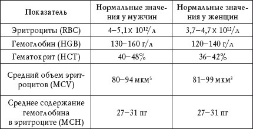
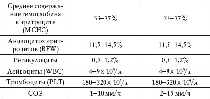
Таблица 2
Лейкоцитарная формула
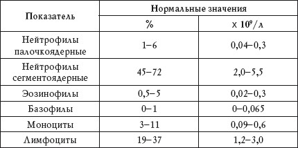
Эритроциты
Общий объем эритроцитов принято называть гематокритной величиной. Выражается она в процентах. Нормальный гематокрит у мужчин – 40—48%, у женщин – 36—42%.
Повышенный показатель
Повышенное содержание эритроцитов наблюдается при:
• обезвоживании организма (токсикоз, рвота, диарея);
• полицитемии;
• эритремии;
• гипоксии.
Нормальное количество эритроцитов у мужчин в 1 мкл крови – 4-5 миллионов, у женщин – 3,74,7 миллиона.
Иногда повышенное содержание эритроцитов наблюдается при врожденных и приобретенных пороках сердца, а также при недостаточной функции коры надпочечников и избытке стероидов в организме. Однако диагностировать эти заболевания невозможно только по результатам общего анализа крови, необходимы и другие исследования.
Пониженный показатель
Пониженное содержание эритроцитов наблюдается при:
• анемии (в этом случае наблюдается также снижение концентрации гемоглобина);
• гипергидратации.
Пониженное содержание эритроцитов также наблюдается при острой кровопотере, при хронических воспалительных процессах, а также на поздних сроках беременности. Кроме того, уменьшение числа эритроцитов характерно для больных с пониженной функцией костного мозга или его патологическими изменениями.
Гемоглобин
Многие заболевания крови связаны с нарушением строения гемоглобина. Если количество гемоглобина выше или ниже нормы, это свидетельствует о наличии патологических состояний.
Нормальное количество гемоглобина у новорожденных составляет 210 г/л, у грудных детей в возрасте до 1 месяца – 170,6 г/л, в возрасте 1-3 месяца – 132,6 г/л, 4-6 месяцев – 129,2 г/л, 7-12 месяцев – 127,5 г/л, у детей от 2 лет – 116-135 г/л.
Повышенный показатель
Повышенное содержание гемоглобина наблюдается при:
•эритремии;
• полицитемии;
• обезвоживании организма (при сгущении крови).
Пониженный показатель
Пониженное содержание гемоглобина наблюдается при:
• анемии;
• кровопотере, в том числе при скрытых кровотечениях (табл. 3).
При некоторых сердечнососудистых заболеваниях количество гемоглобина может быть выше нормы.
Пониженное содержание гемоглобина также характерно для больных раком и людей, у которых поражен костный мозг, почки и некоторые другие органы.
При пониженном содержании гемоглобина, связанном с анемией, рекомендуется употреблять в пищу говяжью печень и паюсную икру.
Таблица 3
Показатели при кровопотере
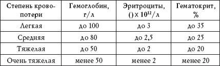
Гематокрит
Гематокрит показывает соотношение объемов плазмы и эритроцитов. Этим показателем принято выражать общий объем эритроцитов. Гематокрит позволяет судить о степени выраженности анемии, при которой он может снизиться на 15-25%.
Повышенный показатель
Повышенный гематокрит наблюдается при:
• полицитемии;
• обезвоживании организма;
• перитоните.
Пониженный показатель
Пониженный гематокрит наблюдается при:
• анемии;
• хронической гиперазотемии.
Повышенный гематокрит может наблюдаться при ожогах за счет уменьшения объема циркулирующей плазмы.
Иногда пониженный гематокрит свидетельствует о хроническом воспалительном процессе или онкологическом заболевании. Также гематокрит понижается на поздних сроках беременности, при голодании, длительном постельном режиме, при заболеваниях сердца, сосудов и почек за счет увеличения объема циркулирующей плазмы.
Средний объем эритроцитов
Этот показатель используют для определения типа анемии. Средний объем эритроцитов высчитывают по величине гематокрита, деленной на количество эритроцитов в 1 мкл крови и умноженной на 10: MCV = H1 x 10/RBC (H1 – гематокрит, RBC – количество эритроцитов, x 1012/л).
Повышенный показатель
Повышенный показатель среднего объема эритроцитов наблюдается при:
• макроцитарной и мегалобластической анемии (недостаток витамина В12, дефицит фолиевой кислоты);
• гемолитической анемии.
Иногда средний объем эритроцитов повышается при болезнях печени и некоторых генетических отклонениях.
Нормальный показатель
Нормальный показатель среднего объема эритроцитов наблюдается при:
• нормоцитарной анемии;
• анемии, сопровождающейся нормоцитозом.
Пониженный показатель
Пониженный показатель среднего объема эритроцитов наблюдается при:
• микроцитарной анемии (дефицит железа, талассемия);
• гемолитической анемии.
Среднее содержание гемоглобина в эритроците
Это отношение гемоглобина к числу эритроцитов. Данный показатель используют для определения типа анемии. Вычисляют его по формуле: MCH = Hb/RBC (Hb – гемоглобин, RBC – количество эритроцитов).
Повышенный показатель
Повышенный показатель среднего содержания гемоглобина в эритроците наблюдается при гиперхромной анемии.
Пониженный показатель
Пониженный показатель среднего содержания гемоглобина в эритроците наблюдается при:
• гипохромной железодефицитной анемии;
• анемии, вызванной онкологическими заболеваниями.
Средняя концентрация гемоглобина в эритроците
Это показатель насыщенности эритроцитов гемоглобином. Его рассчитывают по формуле MCHC = Hb x 10/H1 (Hb – гемоглобин, H1 – гематокрит).
Повышенный показатель
Повышенный показатель средней концентрации гемоглобина в эритроцитах наблюдается при гиперхромной анемии.
Пониженный показатель
Пониженный показатель средней концентрации гемоглобина в эритроцитах наблюдается при гипохромной анемии.
Анизоцитоз эритроцитов
Анизоцитоз – это присутствие в анализе крови эритроцитов, различающихся по размеру. Этот показатель позволяет диагностировать анемию на ранних стадиях. Диаметр зрелого эритроцита равен 7-8 мкм. Микроциты имеют диаметр менее 6,7 мкм, макроциты – более 8 мкл.
Если 30-50% от общего числа эритроцитов составляют микроциты (микроцитоз), это свидетельствует о железодефицитной анемии, микросфероцитозе, талассемии, отравлении свинцом.
Если более 50% от общего числа эритроцитов составляют макроциты (макроцитоз), это свидетельствует о дефиците фолиевой кислоты, алкоголизме и диффузных поражениях печени.
Повышенный показатель
Повышенный анизоцитоз наблюдается при:
• макроцитарной анемии;
• железодефицитной анемии;
• миелодиспластическом синдроме;
• онкологических заболеваниях с метастазами в костный мозг.
Лейкоциты
Лейкоциты поглощают бактерии и отмершие клетки и вырабатывают антитела. Без них организм не может бороться с болезнями. Среднее количество лейкоцитов колеблется от 4000 до 9000 в 1 мкл крови. Увеличение количества лейкоцитов называется лейкоцитозом, уменьшение – лейкопенией.
Анализ крови следует делать натощак после короткого отдыха,поскольку после приема пищи и физического напряжения наблюдается физиологический рост количества лейкоцитов.
Повышенный показатель
Физиологический лейкоцитоз наблюдается при:
• приеме пищи;
• физических и психических нагрузках;
• приеме горячей ванны и холодного душа;
• беременности;
• родах;
• ПМС.
Патологический лейкоцитоз наблюдается при:
• острых и хронических инфекционных заболеваниях (пневмония, пиелонефрит, менингит, перитонит);
• болезнях воспалительного характера (ревматоидный артрит);
• интоксикации;
• гипоксии;
• аллергической реакции;
• гнойном процессе;
• онкологических заболеваниях;
• болезнях крови;
• инфаркте миокарда;
• эпилепсии;
• обширных ожогах;
• обильных кровопотерях;
• введении инсулина, камфары и адреналина.
Пониженный показатель
Лейкопения наблюдается при:
• лучевой болезни;
• отравлении бензолом, мышьяком, ДДТ;
• системной красной волчанке;
• приеме некоторых видов антибиотиков, цитостатических средств, сульфаниламидов;
• инфекционных заболеваниях (брюшной тиф, малярия, грипп, корь, бруцеллез, вирусный гепатит, септический эндокардит);
• функциональных расстройствах нервной системы;
• заболеваниях крови, в частности лейкозах;
• гипоплазии костного мозга;
• заболеваниях селезенки;
• циррозе печени;
• лимфогранулематозе;
• акромегалии;
• онкологических заболеваниях с метастазами в костный мозг;
• воспалительных заболеваниях (гастрит, колит, эндометрит).
Нейтрофилы
Основной функцией нейтрофилов является защита организма от инфекций, которая в основном осуществляется с помощью фагоцитоза.
В крови присутстуют сегментоядерные (большее количество) и палочкоядерные нейтрофилы (меньшее количество). Увеличение количества нейтрофилов называется нейтрофилезом, уменьшение – нейтропенией.
При тяжелом течении воспалительных заболеваний первоначально возникающий лейкоцитоз сменяется лейкопенией.
Повышенный показатель
Нейтрофилез наблюдается при:
• сепсисе;
• перитоните;
• абсцессе;
• остеомиелите;
• пневмонии;
• ангине;
• скарлатине;
• аппендиците;
• холецистите;
• пиелонефрите;
Физиологический нейтрофилез отмечается после приема пищи, а также при стрессе и физическом переутомлении.
• тромбофлебите;
• ревматизме;
• обширных ожогах;
• онкологических заболеваниях;
• эритремии;
• остеомиелофиброзе;
• уремии;
• кетоацидозе;
• подагре;
• эклампсии;
• гемолитической анемии;
• дерматите;
• псориазе;
• узелковом периартериите;
• хорее.
Нейтрофилез может наблюдаться в результате действия гистамина, препаратов наперстянки, кортикостероидов, а также при укусе ядовитых насекомых.
Повышенный показатель на фоне лейкоцитоза
Нейтрофилез на фоне лейкоцитоза наблюдается при:
• дизентерии;
• перитоните;
• сальмонеллезе.
Пониженный показатель
Нейтропения наблюдается при:
• некоторых бактериальных инфекциях;
• гриппе;
• грибковых заболеваниях;
• онкологических болезнях.
Эозинофилы
Эозинофилы выполняют антигистаминную, антитоксическую и фагоцитарную функцию. Для суточного ритма характерна изменчивость количества эозинофилов: самые низкие показатели отмечаются днем, самые высокие – ночью. Увеличение количества эозинофилов называется эозинофилезом, уменьшение – эозинопенией.
Повышенный показатель
Эозинофилез наблюдается при:
• аллергических реакциях (сенная лихорадка, бронхиальная астма, дерматит, отек Квинке);
• паразитарных болезнях;
• лейкозе;
• полицитемии;
• лимфогранулематозе;
• чешуйчатом лишае;
• экземе;
• скарлатине;
• колите;
• эндокардите;
• узелковом периартериите;
• хорее;
• ожогах и обморожениях.
Пониженный показатель
Эозинопения наблюдается при:
• дизентерии;
• сепсисе;
• брюшном тифе;
• травмах;
• ожогах;
• хирургических вмешательствах;
• эклампсии.
Эозинопения может наблюдаться в результате действия адреналина, никотиновой кислоты и кортикостероидов, эозинофилез – после приема антибиотиков, сульфаниламидов.
Базофилы
Функция базофилов заключается в реакциях гиперчувствительности немедленного типа (ГНТ).
Базофилия может наблюдаться в результате действия эстрогенов, базопения – во время овуляции, беременности, а также в стрессовых ситуациях.
Помимо этого, данные клетки крови принимают участие в реакциях гиперчувствительности замедленного типа (ГЗТ) через лимфоциты, аллергических и воспалительных реакциях, а также в регуляции проницаемости стенок сосудов. Увеличение количества базофилов называется базофилией, уменьшение – базопенией.
Повышенный показатель
Базофилия наблюдается при:
• остром лейкозе;
• полицитемии;
• лимфогранулематозе;
• колите;
• микседеме;
• хроническом синусите;
• аллергии;
• гемолитической анемии.
Пониженный показатель
Базопения наблюдается при:
• остром течении инфекционных болезней; •гипертиреозе;
• синдроме Кушинга.
Моноциты
Функция моноцитов заключается в удалении из организма отмирающих клеток, остатков разрушенных клеток, денатурированного белка и бактерий. Кроме того, моноциты играют важную роль в иммунитете. Увеличение количества моноцитов называется моноцитозом, уменьшение – моноцитопенией.
Повышенный показатель
Моноцитоз наблюдается при:
• инфекционном мононуклеозе;
• вирусных и грибковых заболеваниях;
• бруцеллезе;
• саркоидозе;
• энтерите;
• остром лейкозе;
• лимфогранулематозе;
• злокачественном гистиоцитозе;
• хирургических вмешательствах.
Пониженный показатель
Моноцитопения наблюдается при:
• апластической анемии;
• действии глюкокортикостероидов;
• инфекционных болезнях с нейтропенией.
Лимфоциты
Лимфоциты образуются в костном мозге и активно функционируют в лимфоидной ткани. Их главная функция – защита организма от неблагоприятных внешних факторов. Увеличение в крови количества лимфоцитов называется лимфоцитозом, уменьшение – лимфопенией.
Иногда лимфоцитоз наблюдается в результате действия анальгетиков, галоперидола и гризеофульвина, а лимфопения – на фоне приема иммуно-депрессантов.
Повышенный показатель
Лимфоцитоз наблюдается при:
• гриппе;
• аденовирусной инфекции;
• инфекционном мононуклеозе;
• остром вирусном гепатите;
• остром инфекционном лимфоцитозе;
• коклюше;
• кори;
• краснухе;
• лимфолейкозе;
• лимфосаркоме;
• туберкулезе;
• сифилисе;
• малярии;
• дифтерии;
• брюшном тифе; •токсоплазмозе;
• приеме наркотиков;
• бронхиальной астме.
Пониженный показатель
Лимфопения наблюдается при:
• онкологических заболеваниях;
• иммунодефицитных состояниях;
• действии ионизирующего излучения;
• почечной недостаточности;
• хронических болезнях печени;
• системной красной волчанке.
Тромбоциты
Тромбоциты играют большую роль в свертываемости крови – защитной реакции организма, необходимой для предупреждения кровопотери.
Повышенный показатель
Увеличение количества тромбоцитов наблюдается при:
•эритремии;
• миелофиброзе;
• болезнях суставов;
• колите;
• туберкулезе;
• остеомиелите;
• циррозе печени;
• кровотечении;
• онкологических заболеваниях;
• гемолитической анемии.
Увеличение количества тромбоцитов может также наблюдаться в период выздоровления при мегалобластической анемии, после хирургических операций, во время лечения кортикостероидами.
Пониженный показатель
Уменьшение количества тромбоцитов наблюдается при:
• некоторых наследственных заболеваниях;
• апластической анемии;
• лейкозе;
• поражении костного мозга;
• вирусных и бактериальных инфекциях;
• ВИЧ-инфекции;
• отравлении алкоголем и химическими веществами.
При лечении цитостатиками, анальгетиками, анти-гистаминными препаратами, антибиотиками, психотропными лекарствами, витамином К, гепарином, нитроглицерином, резерпином,преднизолоном и эстрогенами количество тромбоцитов в крови уменьшается.
СОЭ
Определение скорости оседания эритроцитов (СОЭ) – один из наиболее часто назначаемых анализов, который позволяет диагностировать наличие патологического процесса в организме.
Когда такой процесс развивается, происходит рост СОЭ, а после выздоровления СОЭ медленно возвращается к норме.
Как правило, СОЭ увеличивается на 2-4-е сутки болезни, а иногда ее максимальное значение наблюдается в самом начале выздоровления. Физиологическое ускорение СОЭ происходит в период беременности и после родов, а также во время менструации.
Повышенный показатель
Увеличение СОЭ наблюдается при:
• острых и хронических инфекциях;
• воспалении тканей;
• болезнях соединительной ткани;
• анемии;
• болезнях почек;
• заболеваниях печени;
• хирургических вмешательствах;
• травмах;
• отравлении химическими веществами;
• онкологических заболеваниях.
Пониженный показатель
Замедление СОЭ наблюдается при:
• анафилактическом шоке;
• плохом кровообращении;
• сердечно-сосудистых заболеваниях.
Миелограмма
Миелограмму выполняют для диагностики патологических изменений системы крови, в частности лейкоза.
Помимо этого, данный анализ позволяет определить некоторые другие заболевания, например лейшманиоз и системную красную волчанку.
Материалом для исследования служит костный мозг, который получают через прокол ости повздошной кости или поверхностного слоя грудины. Это делают под местной или общей анестезией.
Оценку миелограммы (табл. 4) проводят в сопоставлении с клиническим анализом крови.
Таблица 4
Миелограмма. Нормальные показатели
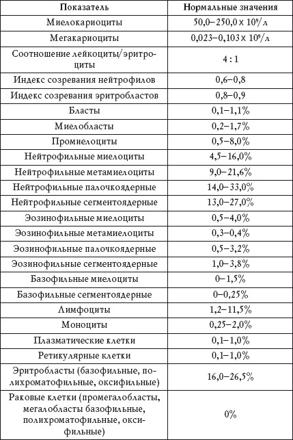
Миелокариоциты
Повышенный показатель
Увеличение количества миелокариоцитов наблюдается при:
• остром лейкозе;
• хроническом миелолейкозе;
• гемолитической анемии;
• кровопотере.
Пониженный показатель
Уменьшение количества миелокариоцитов наблюдается при:
• аплазии кроветворения;
• агранулоцитозе;
• лучевой терапии.
Мегакариоциты
Повышенный показатель
Увеличение количества мегакариоцитов наблюдается при:
• метастазах злокачественных опухолей в костный мозг;
• лейкемии;
• истинной полицитемии;
• хроническом идиопатическом миелофиброзе;
• эссенциальной тромбоцитемии.
Пониженный показатель
Уменьшение количества мегакариоцитов наблюдается при:
• острых лейкозах;
• гипопластических и апластических состояниях.
Соотношение лейкоцитов и эритроцитов
Повышенный показатель
Повышенный показатель соотношения наблюдается при:
• хроническом миелолейкозе;
• сублейкемическом миелозе;
• лейкемоидных реакциях.
Пониженный показатель
Пониженный показатель соотношения наблюдается при:
• гемолизе;
• кровопотере;
• эритремии;
• остром эритромиелозе.
Индекс созревания нейтрофилов
Повышенный показатель
Повышение индекса созревания нейтрофилов наблюдается при:
• бластном кризе;
• хроническом миелолейкозе;
• лекарственной интоксикации.
Индекс созревания эритробластов
Пониженный показатель
Понижение индекса созревания эритробластов наблюдается при:
• дефиците витамина В12;
• гемолизе;
• кровопотере.
Бласты
Повышенный показатель
Увеличение количества бластов наблюдается при:
• остром лейкозе;
• миелоидной форме хронического лейкоза;
• миелодиспластическом синдроме.
Миелобласты
Повышенный показатель
Увеличение количества миелобластов наблюдается при:
• бластном кризе;
• хроническом миелолейкозе;
• миелодиспластическом синдроме.
Промиелоциты
Повышенный показатель
Увеличение количества промиелоцитов наблюдается при:
• лейкемоидных реакциях;
• хроническом миелолейкозе;
• промиелоцитарном лейкозе.
Пониженный показатель
Уменьшение количества промиелоцитов наблюдается при:
• апластической анемии;
• иммунном агранулоцитозе;
• воздействии ионизирующего излучения;
• лечении цитостатиками.
Нейтрофильные миелоциты
Повышенный показатель
Увеличение количества нейтрофильных миелоцитов наблюдается при:
• сублейкемическом миелозе;
• лейкемоидных реакциях;
• хроническом миелолейкозе.
Пониженный показатель
Уменьшение количества нейтрофильных миелоцитов наблюдается при:
• иммунном агранулоцитозе;
• апластической анемии;
• воздействии ионизирующего излучения;
• лечении цитостатиками.
Нейтрофильные метамиелоциты
Повышенный показатель
Увеличение количества нейтрофильных метамиелоцитов наблюдается при:
• сублейкемическом миелозе;
• лейкемоидных реакциях;
• хроническом миелолейкозе.
Пониженный показатель
Уменьшение количества нейтрофильных метамиелоцитов наблюдается при:
• иммунном агранулоцитозе;
• апластической анемии;
• воздействии ионизирующего излучения;
• лечении цитостатиками.
Нейтрофилы палочкоядерные
Повышенный показатель
Увеличение количества палочкоядерных нейтрофилов наблюдается при:
• сублейкемическом миелозе;
• лейкемоидных реакциях;
• хроническом миелолейкозе.
Пониженный показатель
Уменьшение количества палочкоядерных нейтрофилов наблюдается при:
• иммунном агранулоцитозе;
• апластической анемии;
• воздействии ионизирующего излучения;
• лечении цитостатиками.
Нейтрофилы сегментоядерные
Повышенный показатель
Увеличение количества сегментоядерных нейтрофилов наблюдается при:
• сублейкемическом миелозе;
• лейкемоидных реакциях;
• хроническом миелолейкозе.
Пониженный показатель
Уменьшение количества сегментоядерных нейтрофилов наблюдается при:
• иммунном агранулоцитозе;
• апластической анемии;
• воздействии ионизирующего излучения;
• лечении цитостатиками.
Эозинофилы
Повышенный показатель
Увеличение количества эозинофилов наблюдается при:
• остром лейкозе;
• хроническом миелолейкозе;
• лимфогранулематозе;
• онкологических заболеваниях;
• гельминтозах;
• аллергических реакциях.
Базофилы
Повышенный показатель
Увеличение количества базофилов наблюдается при:
• базофильном лейкозе;
• хроническом миелолейкозе;
• эритремии.
Лимфоциты
Повышенный показатель
Увеличение количества лимфоцитов наблюдается при:
• апластической анемии;
• хроническом лимфолейкозе.
Моноциты
Повышенный показатель
Увеличение количества моноцитов наблюдается при:
• лейкозе;
• хроническом миелолейкозе;
• моноцитарном лейкозе;
• сепсисе;
• туберкулезе.
Плазматические клетки
Повышенный показатель
Увеличение количества плазматических клеток наблюдается при:
• миеломной болезни;
• апластической анемии;
• инфекционных заболеваниях;
• иммунном агранулоцитозе.
Увеличение количества плазматических клеток на 20% и более, как правило, свидетельствует о миеломной болезни.
Эритробласты
Повышенный показатель
Увеличение количества эритробластов наблюдается при:
• дефиците фолиевой кислоты и витамина В12;
• гемолитической анемии;
• постгеморрагической анемии;
• остром эритромиелозе.
Пониженный показатель
Уменьшение количества эритробластов наблюдается при:
• апластической анемии;
• лечении цитостатиками;
• воздействии ионизирующего излучения;
• парциальной красноклеточной аплазии.
Раковые клетки
Присутствие в миелограмме раковых клеток свидетельствует о метастазах злокачественных опухолей.
Биохимический анализ
С помощью биохимического анализа крови можно оценить работу почек, печени, поджелудочной железы и других внутренних органов. Помимо этого, данный анализ показывает, каких микроэлементов не хватает в организме.
Биохимический анализ подразумевает исследование следующих показателей:
• белки (альбумин, общий белок, С-реактивный белок, гликированный белок, миоглобин, трансферрин, ферритин, железосвязывающая способность сыворотки, ревматоидный фактор);
• ферменты (аланинаминотрансфераза, аспартатаминотрансфераза, гамма-глутамилтрансфераза, альфа-амилаза, амилаза панкреатическая, лактатдегидрогеназа, креатинкиназа, фосфатаза щелочная, липаза, холинэстераза);
• липиды (общий холестерин, холестерин ЛПВП, холестерин ЛПНП, триглицериды);
• углеводы (глюкоза, фруктозамин);
• пигменты (билирубин, билирубин общий, билирубин прямой);
• низкомолекулярные азотистые вещества (креатинин, мочевая кислота, мочевина);
• неорганические вещества и витамины (железо, калий, кальций, натрий, хлор, магний, фосфор, витамин В12, фолиевая кислота).
Биохимический анализ крови рекомендуется делать в утренние часы, натощак.
Белки
Альбумин
Альбумин – основной белок крови – вырабатывается в печени человека.
Определение в крови уровня альбумина (табл. 5) помогает диагностировать заболевания печени и почек, а также онкологические и ревматические болезни.
Таблица 5
Нормальные показатели альбумина
Повышенный показатель
Повышение уровня альбумина наблюдается при обезвоживании организма.
Пониженный показатель
Понижение уровня альбумина наблюдается при:
• неполноценном питании (недостаточном поступлении белков с пищей);
• приеме эстрогенов, оральных контрацептивов, стероидных гормонов;
• хронических заболеваниях печени (гепатите, циррозе);
• желудочно-кишечных болезнях;
• сепсисе;
• инфекционных заболеваниях;
• ревматизме;
• ожогах;
• травмах;
• онкологических заболеваниях;
• сердечной недосраточности;
• передозировке лекарств.
Во время беременности и кормления грудью биохимический анализ крови показывает небольшое уменьшение количества альбумина.
Общий белок
Во всех биохимических реакциях в организме человека участвуют различные белки. Понятием «общий белок» определяется суммарная концентрация альбумина и глобулинов, находящихся в сыворотке крови. Общий белок участвует в свертывании крови и иммунных реакциях, поддерживает нормальный рН крови, выполняет транспортную функцию.
Определение белка в сыворотке крови (табл. 6) помогает в диагностике заболеваний почек, печени, онкологических и других болезней.
Таблица 6
Нормальные показатели белка
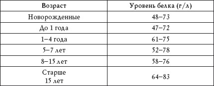
Повышенный показатель
Повышенное содержание белка в крови наблюдается при:
• диарее;
• кишечной непроходимости;
• рвоте;
• обширных ожогах;
• холере;
• острых и хронических инфекционных заболеваниях;
• ревматоидном артрите;
• ревматизме;
• онкологических болезнях.
Пониженный показатель
Понижение содержания белка в крови наблюдается при:
• панкреатите;
• циррозе;
• гепатите;
• раке печени;
• заболеваниях кишечника;
• кровотечении;
• гломерулонефрите;
• обширных ожогах;
• травмах;
• асците;
• онкологических заболеваниях.
Понижение общего белка наблюдается при голодании и физическом переутомлении.
С-реактивный белок
С-реактивный белок (СРБ), стимулирующий защитные реакции и активизирующий иммунитет, быстрее других реагирует на патологические процессы в организме.
Повышение его уровня в сыворотке крови указывает на воспаление, травмы или проникновение в организм инфекции. Уже через несколько часов после инфицирования развивается воспалительный процесс, в результате чего уровень СРБ начинает расти. При этом чем острее протекает заболевание, тем выше уровень С-реактивного белка. Норма СРБ в сыворотке крови – до 0,5 мг/л.
При переходе хронического заболевания в фазу ремиссии СРБ в крови практически не обнаруживается.
Повышенный показатель
Повышение содержания СРБ в крови наблюдается при:
• ревматических заболеваниях;
• болезнях желудочно-кишечного тракта;
• онкологических заболеваниях;
• инфаркте миокарда;
• туберкулезе;
• послеоперационных осложнениях;
• приеме эстрогенов и оральных контрацептивов.
Гликированный белок
Гликированный белок образуется при присоединении к белку гемоглобина глюкозы. Нормальный показатель гликированного гемоглобина – 4-6,5% от количества свободного гемоглобина в крови.
Анализ на гликированный белок – самый эффективный метод диагностики сахарного диабета.
При этом уровень гликированного белка не всегда зависит от концентрации в крови гемоглобина.
Повышенный показатель
Повышение содержания в крови гликированного белка наблюдается при:
• сахарном диабете;
• железодефицитной анемии.
Пониженный показатель
Понижение содержания в крови гликированного белка наблюдается при:
• гипогликемии;
• гемолитической анемии;
• кровотечениях.
Миоглобин
Миоглобин содержится в скелетной и сердечной мышцах. Он доставляет кислород в скелетные мышцы. Поскольку миоглобин выводится из организма с мочой, его количество зависит от работы почек. При нарушении их функции наблюдается рост уровня миоглобина в крови (табл. 7).
Таблица 7
Нормальные показатели миоглобина
Повышенный показатель
Повышение уровня миоглобина наблюдается при:
• инфаркте миокарда;
• почечной недостаточности;
• травмах;
• судорогах;
• ожогах.
Пониженный показатель
Понижение уровня миоглобина наблюдается при:
Физиологическое повышение уровня миоглобина зачастую происходит при мышечном перенапряжении.
• полимиозите;
• ревматоидном артрите;
• аутоиммунных состояниях.
Трансферрин
Трансферрин содержится в плазме крови и является основным поставщиком железа. Насыщение этого белка происходит благодаря его синтезу в печени, поэтому определение уровня трансферрина позволяет оценить функциональное состояние печени.
Нормальный показатель трансферрина – 2-4 г/л. При этом у женщин уровень этого белка на 10% выше, чем у мужчин.
Повышенный показатель
Повышение уровня трансферрина наблюдается при:
• железодефицитной анемии;
• приеме эстрогенов и оральных контрацептивов.
Пониженный показатель
Понижение уровня трансферрина наблюдается при:
• гемохроматозе;
• хронических воспалительных процессах;
• циррозе печени;
• ожогах;
Уровень трансферрина увеличивается при беременности и понижается у пожилых людей.
• избытке в организме железа;
• онкологических заболеваниях;
• нефротическом синдроме.
Ферритин
Ферритин – это основной показатель уровня железа в организме. Он содержится во всех жидкостях и клетках организма. Определение уровня ферритина (табл. 8) используется для диагностики анемии, являющейся следствием онкологических, ревматических и инфекционных болезней.
Таблица 8
Нормальные показатели ферритина
Повышенный показатель
Повышение уровня ферритина наблюдается при:
• гемохроматозе;
• алкогольном гепатите;
• болезнях печени;
• лейкозе;
• остеомиелите;
• пневмонии;
• ожогах;
• ревматоидном артрите;
• раке молочной железы;
• приеме оральных контрацептивов;
• длительном голодании.
Пониженный показатель
Понижение уровня ферритина наблюдается при железодефицитной анемии.
Железосвязывающая способность сыворотки крови (ЖСС)
ЖСС характеризует способность крови к связыванию железа и показывает концентрацию трансферрина в сыворотке крови. При нарушении обмена, поступления и распада железа в организме изменяется ЖСС. Для диагностики анемии определяют латентную железосвязывающую способность сыворотки крови (ЛЖСС), то есть ЖСС без анализа сыворотки. Норма ЛЖСС – 20-62 мкм/л.
Повышенный показатель
Повышение уровня ЛЖСС наблюдается при:
• железодефицитной анемии;
• остром гепатите.
Пониженный показатель
Понижение уровня ЛЖСС наблюдается при:
• нефрозе;
• длительном голодании;
• онкологических заболеваниях;
• хронических инфекционных болезнях;
• циррозе печени;
• гемахроматозе;
• талассемии.
Ревматоидный фактор
При некоторых аутоиммунных заболеваниях, в частности при ревматоидном артрите, иммунная система реагирует на собственные структуры как на чужеродные тела и начинает вырабатывать аутоантитела, которые устраняют собственные ткани.
Ревматоидный фактор становится таким аутоантителом при ревматоидном артрите. Он образуется в суставе, откуда затем попадает в кровь. Нормальный показатель ревматоидного фактора – до 10 ед/мл.
Повышенный показатель
Усиление ревматоидного фактора наблюдается при:
• ревматоидном артрите;
• полимиозите;
• циррозе печени;
• онкологических заболеваниях;
• саркоидозе;
• системной красной волчанке;
• эндокардите;
• туберкулезе;
• сифилисе;
• краснухе;
• гриппе;
• кори;
• гепатите.
Ферменты
Аланинаминотрансфераза
Аланинаминотрансфераза (АЛТ) – это фермент печени, который участвует в обмене аминокислот. АЛТ содержится в печени, сердечной мышце, почках, скелетной мускулатуре. При патологических процессах в этих органах происходит выделение АЛТ в кровь и анализ показывает увеличение уровня данного фермента (табл. 9).
Таблица 9
Нормальные показатели АЛТ
Повышенный показатель
Повышение уровня аланинаминотрансферазы наблюдается при:
• вирусном гепатите;
• циррозе печени;
• токсическом поражении печени;
• хроническом алкоголизме;
• сердечной недостаточности;
• миокардите;
• инфаркте миокарда;
• панкреатите;
• ожогах;
• травмах скелетных мышц.
Пониженный показатель
Понижение уровня АЛТ наблюдается при:
• циррозе печени;
• дефиците витамина В6.
Аспартатаминотрансфераза
Аспартатаминотрансфераза (АСТ) – это клеточный фермент, который участвует в обмене аминокислот. АСТ содержится в тканях печени, почек, сердца, скелетной мускулатуры и других органов. Отклонение уровня АСТ от нормы (табл. 10) свидетельствует о патологических процессах в организме.
Таблица 10
Нормальные показатели АСТ
Повышенный показатель
Повышение уровня АСТ наблюдается при:
• инфаркте миокарда;
• стенокардии;
• гепатите;
• раке печени;
• остром ревмокардите;
• сердечной недостаточности;
• травмах скелетных мышц;
• ожогах;
• тепловом ударе.
При тяжелых физических нагрузках уровень АСТ в крови может повыситься.
Пониженный показатель
Понижение уровня АСТ наблюдается при:
• разрыве печени;
• дефиците витамина В6.
Гамма-глутамилтрансфераза
Гамма-глутамилтрансфераза (ГГТ) – это фермент, который участвует в обмене аминокислот. ГГТ содержится в почках, поджелудочной железе и печени. Отклонение уровня ГГТ от нормы (табл. 11) свидетельствует о патологических процессах в организме.
Таблица 11
Нормальные показатели ГГТ
Повышенный показатель
Повышение уровня ГГТ наблюдается при:
• желчнокаменной болезни;
• остром и хроническом гепатите;
• остром и хроническом панкреатите;
• алкоголизме;
• токсическом поражении печени;
• сахарном диабете; •гипертиреозе;
У новорожденных норма ГГТ в 2-4 раза выше, чем у взрослых.
• обострении пиелонефрита;
• злокачественных опухолях поджелудочной железы, печени и простаты;
• приеме эстрогенов и оральных контрацептивов.
Амилаза
Альфа-амилаза (диастаза) образуется в поджелудочной железе и слюнных железах, панкреатическая амилаза – в поджелудочной железе.
Эти ферменты расщепляют крахмал и другие углеводы и обеспечивает переваривание пищи. Норма альфа-амилазы в крови – 28-100 ед/л, панкреатической амилазы – 0-50 ед/л.
Альфа-амилаза
Повышенный показатель
Повышение уровня альфа-амилазы наблюдается при:
• остром и хроническом панкреатите;
• кисте поджелудочной железы;
• желчнокаменной болезни;
• опухоли поджелудочной железы;
• эпидемическом паротите;
• остром перитоните;
• сахарном диабете;
• холецистите;
• почечной недостаточности;
• травме живота;
• аборте.
Панкреатическая амилаза
Повышенный показатель
Повышение уровня панкреатической амилазы наблюдается при:
• остром панкреатите;
• эпидемическом паротите;
• закупорке протока поджелудочной железы камнем, спайками, кистой или опухолью.
Пониженный показатель
Понижение уровня альфа-амилазы и панкреатической амилазы наблюдается при:
• недостаточности функции поджелудочной железы;
• остром и хроническом гепатите;
• токсикозе беременных.
Лактатдегидрогеназа
Лактатдегидрогеназа (ЛДГ) – фермент, который участвует в процессе окисления глюкозы и образовании молочной кислоты. ЛДГ содержится во всех органах и тканях организма. Анализ крови на ЛДГ (табл. 12) проводят для диагностики заболеваний печени, сердечной мышцы, а также онкологических болезней.
Таблица 12
Нормальные показатели ЛДГ
Повышение уровня ЛДГ характерно при беременности и после физической нагрузки. Также наблюдается увеличение ЛДГ после приема алкоголя.
Повышенный показатель
Повышение уровня ЛДГ наблюдается при:
• гепатите;
• циррозе печени;
• инфаркте миокарда;
• инфаркте легкого;
• анемии;
• остром лейкозе;
• мышечной атрофии;
• травмах скелетных мышц;
• пиелонефрите;
• гломерулонефрите;
• онкологических заболеваниях;
• сердечной недостаточности;
• кровотечении;
• лечении кофеином, инсулином, анестетиками и аспирином.
Креатинкиназа
Креатинкиназа содержится в скелетных мышцах (реже в гладких) и обеспечивает энергией их клетки. Выход фермента из клеток происходит при повреждении мышц, поэтому определение уровня креатинкиназы в крови (табл. 13 и 14) применяется в ранней диагностике инфаркта миокарда.
Анализ креатинкиназы позволяет диагностировать инфаркт миокарда со 100%-ной точностью. Нормы креатинкиназы в крови – 0-24 ед/л.
Таблица 13
Нормальные показатели креатинкиназы у детей и подростков
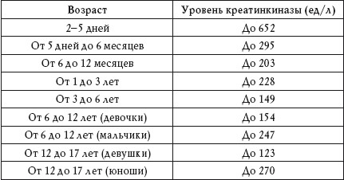
Таблица 14
Нормальные показатели креатинкиназы у взрослых
Повышенный показатель
Повышение уровня креатинкиназы наблюдается при:
• инфаркте миокарда;
• миокардите;
• миокардиодистрофии;
• тахикардии;
• сердечной недостаточности;
• столбняке;
• гипотиреозе;
• белой горячке;
• шизофрении;
• эпилепсии;
• маниакально-депрессивном психозе;
• черепно-мозговой травме;
• онкологических заболеваниях.
Пониженный показатель
Понижение уровня креатинкиназы наблюдается при снижении мышечной массы и малоподвижном образе жизни.
Щелочная фосфатаза
Щелочная фосфатаза участвует в обмене фосфорной кислоты и способствует транспорту фосфора в организме. Больше всего щелочной фосфатазы содержится в костной ткани, слизистой оболочке кишечника, плаценте и молочной железе во время лактации.
Определение уровня щелочной фосфатазы в крови (табл. 15) позволяет диагностировать болезни печени, костной системы, почек и желчевыводящих путей.
Таблица 15
Нормальные показатели щелочной фосфатазы
Повышенный показатель
Повышение уровня щелочной фосфатазы наблюдается при:
• заболеваниях костной ткани, в том числе и онкологических;
• миеломной болезни;
• инфекционном мононуклеозе;
• лимфогранулематозе с поражением костей;
• рахите;
У детей уровень щелочной фосфатазы в крови выше, чем у взрослых. Также увеличение количества щелочной фосфатазы происходит в последнем триместе беременности.
• циррозе печени;
• инфекционном гепатите;
• инфаркте легкого;
• инфаркте почки;
• опухоли желчевыводящих путей;
• передозировке витамина С;
• приеме антибиотиков;
• приеме оральных контрацептивов, содержащих прогестерон и эстроген;
• дефиците кальция и фосфатов в пище;
• менопаузе.
Пониженный показатель
Понижение уровня щелочной фосфатазы наблюдается при:
• гипотиреозе;
• дефиците цинка, магния, витамина В12 в пище;
• цинге;
• анемии;
• нарушениях роста костной ткани.
Липаза
Липаза участвует в расщеплении нейтральных жиров – триглицеридов – на глицерин и высшие жирные кислоты. Она синтезируется многими органами и тканями организма. Норма липазы – от 0 до 190 ед/л.
Повышенный показатель
Повышение уровня липазы наблюдается при:
• панкреатите;
• опухоли и кисте поджелудочной железы;
• хронических заболеваниях желчного пузыря;
• непроходимости кишечника;
• перитоните;
• переломах костей;
• травмах мягких тканей;
• опухоли молочной железы;
• почечной недостаточности;
• ожирении;
• сахарном диабете;
• эпидемическом паротите;
• приеме барбитуратов.
Пониженный показатель
Понижение уровня липазы наблюдается при:
• онкологических заболеваниях, кроме опухоли поджелудочной железы;
• избытке в организме триглицеридов, что является следствием неправильного питания.
Холинэстераза
Холинэстераза (ХЭ) образуется в печени, содержится в скелетных мышцах и нервной ткани.
Сывороточная ХЭ присутствует в поджелудочной железе и в печени. Нормальный показатель холинэстеразы – 5300-12 900 ед/л.
Повышенный показатель
Повышение уровня холинэстеразы наблюдается при:
• артериальной гипертонии;
• нефрозе;
Уровень холинэстеразы может повыситься на раннем сроке беременности и понизиться на позднем.
• опухоли молочной железы;
• ожирении;
• алкоголизме;
• столбняке;
• сахарном диабете;
• маниакально-депрессивном психозе;
• депрессивном неврозе.
Пониженный показатель
Понижение уровня холинэстеразы наблюдается при:
• циррозе печени;
• гепатите;
• метастатическом раке печени;
• инфаркте миокарда;
• онкологических болезнях;
• приеме оральных контрацептивов, глюкокортикоидов, анаболических стероидов.
Липиды
Холестерин
Холестерин участвует в жировом обмене, синтезе половых гормонов и витамина D, а также в построении мембран клеток. Синтез холестерина происходит в печени. Часть холестерина поступает в организм с пищей.
Нормальный показатель холестерина в крови – 3—6 ммоль/л.
Основной транспортной формой общего холестерина является холестерин липопротеинов низкой плотности (холестерин ЛПНП) (табл. 16).
Холестерин содержится в сливочном масле, яйцах, молоке, жирном мясе и рыбе.
Он переносит общий холестерин в органы и ткани.
Таблица 16
Нормальные показатели холестерина ЛПНП
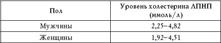
Транспорт жиров от одной группы клеток к другой осуществляет холестерин липопротеинов высокой плотности (холестерин ЛПВП) (табл. 17). Он переносит холестерин из сосудов сердца, сердечной мышцы и артерий мозга в печень – в ней из холестерина образуется желчь.
Таблица 17
Нормальные показатели холестерина ЛПВП
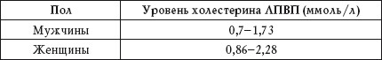
Повышенный показатель
Повышение уровня холестерина в крови наблюдается при:
• неправильном питании (преобладании в рационе продуктов, богатых углеводами и насыщенными жирами);
• ишемической болезни сердца;
• атеросклерозе;
• первичном циррозе;
• гломерулонефрите;
• хронической почечной недостаточности;
• нефротическом синдроме;
• хроническом панкреатите;
Повышенный уровень холестерин наблюдается, как правило, у людей, которые курят и злоупотребляют алкоголем.
• опухоли поджелудочной железы;
• сахарном диабете;
• гипотиреозе;
• подагре;
• алкоголизме;
• нервной анорексии;
• приеме оральных контрацептивов.
Пониженный показатель
Понижение уровня холестерина наблюдается при:
• нарушении питания (отсутствии в рационе продуктов, богатых углеводами и насыщенными жирами);
• голодании;
• обширных ожогах;
• гипертиреозе;
• хронической сердечной недостаточности;
• мегалобластической анемии;
• талассемии;
• миеломной болезни;
• сепсисе;
• острых инфекционных заболеваниях;
• хронических болезнях легких;
• туберкулезе легких;
• терминальной стадии цирроза печени;
• приеме эстрогенов.
Триглицериды
Триглицериды (ТГ), или нейтральные жиры, являются производными глицерина. Это главный источник энергии для клеток. ТГ синтезируются в печени, кишечнике и жировой ткани, поступая в организм с пищей. Уровень ТГ в крови (табл.18 и 19)зависит от пола и возраста человека.
Таблица 18
Нормальные показатели триглицеридов у детей
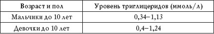
Таблица 19
Нормальные показатели триглицеридов у взрослых
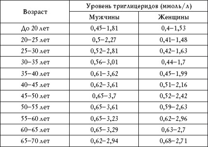
Повышенный показатель
Повышение ТГ наблюдается при:
• инфаркте миокарда;
• гипертонии;
• ишемической болезни сердца;
• атеросклерозе;
• тромбозе сосудов мозга;
Повышение уровня ТГ часто наблюдается при беременности, понижение – при приеме витамина С.
• ожирении;
• хронической почечной недостаточности;
• циррозе печени;
• вирусном гепатите;
• подагре;
• талассемии;
• синдроме Дауна;
• анорексии;
•гиперкальцемии;
• сахарном диабете;
• гипотериозе;
• панкреатите;
• приеме оральных контрацептивов.
Пониженный показатель
Понижение ТГ наблюдается при:
• инфаркте мозга;
• гипертиреозе;
• хронических болезнях легких;
• травмах;
• ожогах;
• неполноценном питании;
• миастении;
• поражении ткани почек.
Углеводы
Глюкоза
Глюкоза является основным показателем углеводного обмена в организме. Концентрация глюкозы в крови регулируется гормонами, в частности инсулином. Определение уровня глюкозы в крови (табл. 20) помогает в диагностике сахарного диабета.
Таблица 20
Нормальные показатели глюкозы
Повышенный показатель
Повышение уровня глюкозы наблюдается при:
• сахарном диабете;
• эндокринных нарушениях;
• опухоли поджелудочной железы;
• панкреатите;
• муковисцидозе;
• хронических заболеваниях печени и почек;
• неполноценном питании;
Нормальные показатели глюкозы при беременности – 3,3-6,6 ммоль/л.
• инфаркте миокарда;
• стрессе;
• эмоциональном возбуждении.
Пониженный показатель
Понижение уровня глюкозы наблюдается при:
• болезнях поджелудочной железы;
• гипотиреозе;
• циррозе;
• гепатите;
• раке надпочечников;
• раке печени;
• раке желудка;
• отравлении мышьяком;
• отравлении алкоголем.
Фруктозамин
Фруктозамин показывает уровень содержания глюкозы в крови. Он образуется в результате взаимодействия глюкозы с белками крови, в основном с альбумином. Анализ на фруктозамин проводят для краткосрочного наблюдения за уровнем глюкозы в крови. Нормальный показатель фруктозамина – 205-285 мкмоль/л. У детей этот показатель ниже, чем у взрослых.
Повышенный показатель
Повышение уровня фруктозамина наблюдается при:
• сахарном диабете;
• гипотиреозе;
• почечной недостаточности.
Пониженный показатель
Понижение уровня фруктозамина наблюдается при:
• нефротическом синдроме;
• гипертиреозе;
• диабетической нефропатии;
• приеме витамина С.
Пигменты
К пигментам крови относятся прямой билирубин и непрямой билирубин. Вместе они образуют общий билирубин – желто-красный пигмент, продукт распада гемоглобина и некоторых других составляющих крови. Изменение нормальных показателей билирубина в большинстве случаев свидетельствует о патологических процессах в организме. Норма общего билирубина – 3,4—17,1 мкмоль/л, прямого – 0—3,4 мкмоль/л. У новорожденных билирубин высокий (физиологическая желтуха).
Общий билирубин
Повышенный показатель
Повышение уровня общего билирубина наблюдается при:
• гепатите;
• дефиците витамина В12;
• раке печени;
• первичном циррозе печени;
• желчнокаменной болезни;
• токсическом, лекарственном и алкогольном отравлении.
Прямой билирубин
Повышенный показатель
Повышение уровня прямого билирубина наблюдается при:
• остром вирусном гепатите;
• токсическом гепатите;
• инфекционном поражении печени;
• гипотиреозе новорожденных;
• желтухе беременных.
Низкомолекулярные азотистые вещества
Креатинин
Креатинин является конечным продуктом обмена белков. Он образуется в печени, выделяется в кровь и участвует в энергетическом обмене в мышечной ткани. Из организма креатинин выводится почками с мочой. Отклонения уровня креатинина от нормы (табл. 21 и 22), как правило, свидетельствуют о нарушении функции почек и состояния скелетных мышц.
Таблица 21
Нормальные показатели креатинина у детей
Таблица 22
Нормальные показатели креатинина у взрослых
Повышенный показатель
Увеличение количества креатинина наблюдается при:
• острой и хронической почечной недостаточности;
• лучевой болезни;
• гипертиреозе;
• обезвоживании организма;
• повреждениях мышц;
• нарушении питания (избытке в рационе мясной пищи).
Пониженный показатель
Уменьшение количества креатинина наблюдается при:
• приеме кортикостероидов;
• голодании;
• нарушении питания (вегетарианской диете);
• снижении мышечной массы.
В I и II триместре беременности происходит снижение уровня креатинина в крови.
Мочевая кислота
Мочевая кислота синтезируется в печени в виде солей натрия и содержится в плазме крови.
Она выводит из организма избыток азота. За выведение мочевой кислоты из крови отвечают почки.
При нарушении их функции наблюдается и нарушение обмена мочевой кислоты – накопление в крови солей натрия.
Уровень мочевой кислоты зависит от возраста и пола (табл. 23).
Таблица 23
Нормальные показатели мочевой кислоты
Повышенный показатель
Повышение уровня мочевой кислоты в крови – гиперурикемия – наблюдается при:
• подагре;
• лейкозе;
• дефиците витамина В12;
• пневмонии;
• скарлатине;
• туберкулезе;
• болезнях печени и желчевыводящих путей;
• сахарном диабете;
• хронической экземе;
Уровень мочевой кислоты в крови может повыситься после физической нагрузки, приема алкоголя, а также при длительном голодании.
• псориазе;
• крапивнице;
• болезнях почек;
• ацидозе;
• остром алкогольном отравлении;
• токсикозе беременных;
• неправильном питании (преобладание в рационе пищи, богатой углеводами и жирами).
Пониженный показатель
Понижение уровня мочевой кислоты в крови – гипоурикемия – наблюдается при:
• синдроме Фанкони;
• болезни Вильсона – Коновалова;
• неправильном питании (диете, бедной нуклеиновыми кислотами).
Мочевина крови
Мочевина крови является основным продуктом распада белков. Она вырабатвается печенью из аммиака и участвует в процессе концентрации мочи. Выводится из организма почками. Отклонение уровня мочевины от нормы (табл. 24) свидетельствует о нарушении функции почек.
Таблица 24
Нормальные показатели мочевины крови
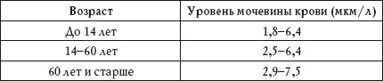
Повышенный показатель
Повышение уровня мочевины крови наблюдается при:
• пиелонефрите;
• гломерулонефрите;
• туберкулезе почек;
• сердечной недостаточности;
• аденоме простаты;
• мочекаменной болезни;
• опухоли мочевого пузыря;
• лейкозе;
• сильных кровотечениях;
• непроходимости кишечника;
• непроходимости мочевыводящих путей;
• инфаркте миокарда;
• шоковом состоянии;
• ожогах;
• приеме андрогенов и глюкокортикоидов.
Концентрация мочевины в крови зависит от питания человека. Если в рационе преобладает белковая пища, может отмечаться повышение уровня мочевины в крови, если растительная – понижение.
Пониженный показатель
Понижение уровня мочевины крови наблюдается при:
• гепатите;
• циррозе печени;
• отравлении фосфором и мышьяком.
Неорганические вещества и витамины
Железо
Железо (Fe) помогает крови насыщать органы и ткани кислородом. Ионы железа входят в состав гемоглобина и миоглобина, окрашивая кровь в красный цвет. Железо поступает в организм человека с пищей, усваивается в кишечнике, разносится по кровеносным сосудам и попадает в костный мозг, где образуются эритроциты.
Нормальное количество железа в организме человека зависит от его пола и возраста (табл. 25), а также от уровня гемоглобина, веса и роста.
Таблица 25
Нормальные показатели железа
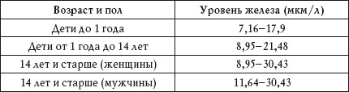
Повышенный показатель
Повышение уровня железа в крови наблюдается при:
• гемохроматозе;
• отравлении препаратами железа;
• гемолитической анемии;
• гипо– и апластической анемии;
• дефиците витаминов В6 и В12;
• нефрите;
• талассемии;
• гепатите;
• отравлении свинцом;
• острой лейкемии;
• приеме эстрогенов и оральных контрацептивов.
Пониженный показатель
Понижение уровня железа в крови наблюдается при:
• железодефицитной анемии;
• острых и хронических инфекционных болезнях;
• лейкозе;
• миеломе;
• кровотечении;
• заболеваниях желудка и кишечника;
У женщин потребность в железе в 2 раза выше, чем у мужчин, так как значительное его количество теряется во время менструаций. Беременным необходимо потреблять железа с пищей в 1,5 раза выше нормы.
• гипотиреозе;
• гепатите;
• циррозе;
• неполноценном питании (молочно-растительной диете);
• приеме андрогенов, аспирина, глюкокортикоидов.
Калий
Калий (K), наряду с натрием и хлоридами, обеспечивает электрические свойства клеточных мембран.
Уровень калия в крови зависит от возраста (табл. 26).
Таблица 26
Нормальные показатели калия
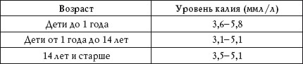
Повышенный показатель
Повышение уровня калия – гиперкалиемия – наблюдается при:
• гемолизе;
• длительном голодании;
• тяжелых травмах;
• обезвоживании организма;
• острой почечной недостаточности.
Пониженный показатель
Понижение уровня калия – гипокалиемия – наблюдается при:
• длительном голодании;
• неукротимой рвоте;
• продолжительной диарее;
• нарушении функции почек;
• муковисцидозе.
Натрий
Натрий (Na), наряду с калием и хлоридами, обеспечивает электрические свойства клеточных мембран. Нормальный уровень натрия в крови – 280-1000 мкг/кг.
Повышенный показатель
Повышение уровня натрия – гипернатриемия – наблюдается при:
• избыточном потреблении соли;
• некротимой рвоте;
• продолжительной диарее;
• усиленном мочеотделении;
• несахарном диабете;
• патологии гипоталамуса.
Пониженный показатель
Понижение уровня натрия – гипонатриемия – наблюдается при:
• патологии почек;
• злоупотреблении мочегонными препаратами;
• сахарном диабете;
• хронической сердечной недостаточности;
• циррозе печени;
• нефротическом синдроме.
Хлориды
Хлориды входят в состав желудочного сока и играют большую роль в процессе пищеварения. Уровень хлоридов в крови зависит от возраста (табл. 27).
Таблица 27
Нормальные показатели хлоридов
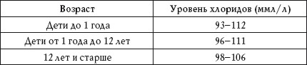
Повышенный показатель
Повышение уровня хлоридов наблюдается при:
• обезвоживании организма;
• острой почечной недостаточности;
• отравлении салицилатами;
• несахарном диабете;
• повышенной функции коры надпочечников.
Пониженный показатель
Понижение уровня хлоридов наблюдается при:
• неукротимой рвоте;
• промывании желудка;
• избыточном потоотделении.
Кальций
Кальций (Ca) принимает участие в проведении нервных импульсов, как и калий, натрий и хлориды удерживает жидкость в сосудах, препятствуя развитию отеков. Кальций входит в состав костной ткани и зубной эмали, он необходим для мышечного сокращения и свертывания крови.
Уровень кальция в крови регулирует витамин D и гормон паращитовидных желез. Нормальный показатель кальция – 2,15—2,5 ммл/л.
Повышенный показатель
Повышение уровня кальция в крови – гиперкальциемия – наблюдается при:
• усилении функции паращитовидной железы;
• онкологических заболеваниях с поражением костей;
• саркоидозе;
• избытке витамина D;
• обезвоживании организма;
• тиреотоксикозе;
• туберкулезе позвоночника;
• острой почечной недостаточности.
Пониженный показатель
Понижение уровня кальция в крови – гипокальциемия – наблюдается при:
Кальций поддерживает нормальный ритм сердцебиения, участвует в обмене железа, регулирует ферментную активность, способствует нормальной работе нервной системы, участвует в сокращении мышц, поддерживает в нормальном состоянии кости и зубы.
• ослаблении функции щитовидной железы;
• рахите;
• хронической почечной недостаточности;
• нехватке магния;
• гипоальбуминемии;
• остеопорозе;
• остеомаляции;
• панкреатите;
• кахексии;
• механической желтухе;
• хронической бессоннице;
• длительном голодании;
• продолжительной рвоте;
• продолжительной диарее;
• ацидозе;
• муковисцидозе.
Неорганический фосфор
Неорганический фосфор (P) входит в состав нуклеиновых кислот, костной ткани и основных систем обеспечения клеток энергией. Его уровень (табл. 28) регулируется параллельно с уровнем кальция.
Таблица 28
Нормальные показатели неорганического фосфора
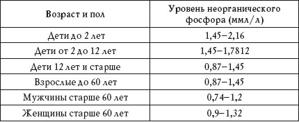
Повышенный показатель
Повышение уровня неорганического фосфора наблюдается при:
• саркоидозе;
• лейкозе;
• избыточном накоплении витамина D;
• заживлении переломов;
• снижении функции паращитовидных желез;
• почечной недостаточности;
• остеопорозе;
• ацидозе;
• циррозе печени.
Пониженный показатель
Понижение уровня неорганического фосфора наблюдается при:
• рахите;
• неукротимой рвоте;
• длительной диарее;
• гиперкальциемии;
• пародонтозе;
• подагре;
• лечении сахарного диабета;
• повышенной функции паращитовидных желез.
Магний
Магний (Mg) участвует в синтезе белка. Он необходим для нормальной работы сердца, участвует в работе нервной и мышечной ткани. Нормальное количество магния – 0,65—1,05 ммл/л.
Повышенный показатель
Повышение уровня магния в крови – гипермагниемия – наблюдается при:
• обезвоживании организма;
• почечной недостаточности;
• миеломе;
• передозировке препаратов магния.
Пониженный показатель
Понижение уровня магния в крови – гипомагниемия – наблюдается при:
• неполноценном питании;
• неукротимой рвоте;
• продолжительной диарее;
• диабетическом ацидозе;
• рахите;
• остром панкреатите;
• алкоголизме;
• снижении функции паращитовидных желез;
• беременности;
• туберкулезе легких;
• раке печени;
• приеме диуретиков.
Сосудисто-тромбоцитарный гемостаз
Сосудисто-тромбоцитарный гемостаз позволяет оценить резистентность капилляров, время остановки кровотечения и свойства тромбоцитов. Нормальные показатели приведены в таблице 29.
Таблица 29
Нормальные показатели при сосудисто-тромбоцитарном гемостазе
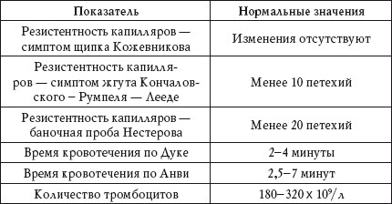
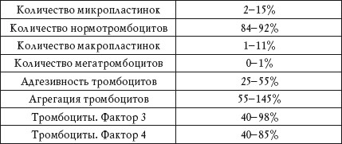
Резистентность капилляров
Резистентность капилляров – это их способность сохранять целостность сосудистой стенки при механическом воздействии. При нарушении резистентности наблюдается ломкость капилляров. Резистентность капилляров определяется симптомом щипка Кожевникова, симптомом жгута Кончаловского-Румпеля-Лееде и баночной пробой Нестерова.
Симптом щипка Кожевникова. При нарушении резистентности капилляров на месте щипка кожи под ключицей появляются мельчайшие кровоизлияния (петехии) или кровоподтеки.
Симптом жгута Кончаловского – Румпеля – Лееде. У здоровых людей при повышении давления в тонометре до 80 мм ртутного столба в течение 5 минут на предплечье в 2 см от локтевой ямки в круге диаметром 2,5 см петехии не образуются или образуется не более 10 петехий (диаметром до 1 мм).
Баночная проба Нестерова. Данный анализ основан на создании отрицательного давления в кюветах диаметром 1,5 см, которые накладывают под ключицами.
У здоровых людей в течение 3 минут при разрежении до 30 мм ртутного столба появляется не более 20 мелких петехий.
Повышенные показатели
Повышенная ломкость капилляров наблюдается при:
• сепсисе;
• сыпном тифе;
• дефиците витамина С;
• эндокринных нарушениях;
• ДВС-синдроме;
• передозировке антикоагулянтнов;
• дефиците факторов протромбинового комплекса.
Время кровотечения
Время, которое проходит с момента нанесения раны на коже глубиной не менее 3 мм до прекращения кровотечения, называется временем кровотечения. Его определяют путем прикладывания к ране полоски фильтровальной бумаги.
Данное тестирование позволяет оценить первичный гемостаз, оно характеризует активность капилляров и тромбоцитов и не зависит от процессов свертывания крови.
Время кровотечения по Дуке. Для данного анализа прокалывают кончик пальца или мочку уха.
Время кровотечения по Анви. Для данного анализа наносят рану на передней поверхности предплечья в условиях повышенного давления (40 мм ртутного столба, манжета на плече).
Повышенный показатель
Повышенное время кровотечения наблюдается при:
• иммунных нарушениях;
• аллергии;
• инфекционных заболеваниях;
• болезнях крови;
• циррозе печени;
• ДВС-синдроме;
• кровотечениях с гипофибриногенемией;
• действии гепарина, дезагрегатов и салицилатов;
• дефиците витамина С.
Пониженный показатель
Пониженное время кровотечения наблюдается при повышенной спастической способности периферических капилляров, а также вследствие технической ошибки.
Количество тромбоцитов
Об увеличении и уменьшении количества тромбоцитов подробно говорилось в разделе «Общий анализ крови».
Адгезивность тромбоцитов
Адгезивность тромбоцитов, или ретенция, – это свойство тромбоцитов прилипать к поврежденной сосудистой стенке и лейкоцитам.
Повышенный показатель
Повышение адгезивности тромбоцитов наблюдается при ишемической болезни сердца, а также в послеродовом и послеоперационном периоде.
Пониженный показатель
Понижение адгезивности тромбоцитов наблюдается при:
• тромбоцитопатии;
• тромбастении;
• уремии;
• лейкозе;
• тромбофлебите.
Агрегация тромбоцитов
Агрегация тромбоцитов – это их свойство склеиваться друг с другом с образованием агрегатов.
Нарушение всех параметров агрегации свидетельсвует о тромбастении Гланцмана или эссенциальной атромбоцитопатии II типа, отсутствие второй волны агрегации – о тромбоцитопатии.
Спонтанная агрегация
Спонтанная агрегация наблюдается при:
• ДВС-синдроме;
• тромбозах;
• сахарном диабете;
• атеросклерозе;
• нарушении коронарного и мозгового кровообращения;
•гиперлипопротеинемии.
Тромбоциты. Фактор 3
Фактор 3 – это тромбоцитарный тромбопластин.
Пониженный показатель
Пониженная активность фактора 3 наблюдается при:
• тромбоцитопении;
• тромбоцитопатии.
Тромбоциты. Фактор 4
Фактор 4 – это антигепариновый фактор.
Повышенный показатель
Повышенный показатель (время укорочено) наблюдается при:
• тромбозе;
• атеросклерозе;
• ДВС-синдроме.
Даже здоровым людям развернутый анализ крови необходимо сдавать 1 раз в год.
Пониженный показатель Пониженный показатель (время удлинено) наблюдается при:
• тромбоцитопатии;
• лечении аспирином, папаверином, бутадионом.
Содержание гормонов в крови
Гормоны вырабатываются железами внутренней секреции, выделяются непосредственно в кровь и оказывают огромное влияние на функции всех органов и систем организма.
Гормоны гипофиза
Нормальные показатели содержания гормонов гипофиза в крови приведены в таблице 30.
Таблица 30
Нормальные показатели содержания гормонов гипофиза
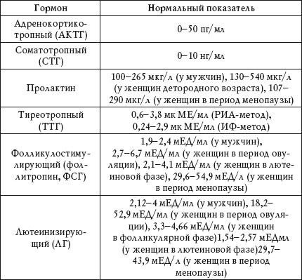
Адренокортикотропный гормон
Является стимулятором синтеза гормонов коры надпочечников.
Повышенный показатель
Повышение АКТГ наблюдается при:
• болезни Аддисона;
• врожденной гиперплазии надпочечников;
• болезни Иценко – Кушинга.
Пониженный показатель
Понижение АКТГ наблюдается при:
• вторичной недостаточности надпочечников;
• опухолях надпочечников.
Соматотропный гормон
Это так называемый гормон роста. Он стимулирует рост органов, мышц и костей.
Повышенный показатель
Повышение концентрации СТГ наблюдается при:
• акромегалии;
• гигантизме.
Пониженный показатель
Понижение концентрации СТГ наблюдается при гипофизарном нанизме.
Пролактин
У женщин пролактин стимулирует рост и развитие молочных желез, усиливает лактацию, у мужчин влияет на рост семенных пузырьков и простаты.
Повышенный показатель
Повышение концентрации пролактина у женщин наблюдается при:
• беременности;
• кормлении грудью;
• опухолях гипофиза;
• аменорее;
• первичном гипотиреозе;
При повышении концентрации пролактина у мужчин наблюдается нарушение потенции.
• поликистозе яичников;
• приеме больших доз эстрогенов.
Тиреотропный гормон
ТТГ стимулирует процессы йодирования тирозина и распад тиреоглобулина в щитовидной железе.
Повышенный показатель
Повышение уровня ТТГ наблюдается при:
• первичном гипотиреозе;
• тиреоидите.
Пониженный показатель
Понижение уровня ТТГ наблюдается при:
• вторичном гипотиреозе;
• аденоме щитовидной железы;
• тиреотоксикозе.
Фолликулостимулирующий гормон
ФСГ оказывает огромное влияние на функции половых желез. У мужчин он стимулирует сперматогенез и развитие семенных канальцев, у женщин – фолликулов.
Повышенный показатель
Повышение концентрации ФСГ наблюдается при:
• первичной недостаточности яичников;
• дисфункциях сперматогенеза;
• менопаузе;
• синдромах Кляйнфелтера и Тернера.
Пониженный показатель
Понижение концентрации ФСГ наблюдается при:
• гипофункции гипоталамуса;
Во время беременности уровень ФСГ приближается к нулю.
• вторичной недостаточности яичников;
• раке предстательной железы;
• приеме эстрогенов и оральных контрацептивов.
Лютеинизирующий гормон
ЛГ стимулирует секрецию тестостерона у мужчин и эстрогенов и прогестерона у женщин.
Повышенный показатель
Повышение концентрации ЛГ в крови наблюдается при дисфункции половых желез.
Пониженный показатель
Понижение концентрации в крови ЛГ наблюдается при:
• вторичной недостаточности половых желез;
• нарушении функции гипоталамуса или гипофиза;
• приеме больших доз прогестерона и эстрогенов.
Гормоны щитовидной железы
Нормальные показатели содержания гормонов щитовидной железы в крови приведены в таблице 31.
Таблица 31
Нормальные показатели содержания гормонов щитовидной железы
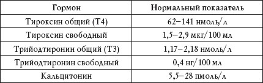
Тироксин и трийодтиронин
Т4 и Т3 регулируют интенсивность углеводного, белкового и жирового обмена, оказывают влияние на функции дыхательной, сердечно-сосудистой, иммунной и нервной системы.
Повышенный показатель
Повышение уровня Т3 и Т4 наблюдается при:
• тиреотоксикозе;
• дефиците в организме йода.
Пониженный показатель
Понижение уровня Т3 и Т4 наблюдается при:
• гипотиреозе;
• действии дексаметазона.
Кальцитонин
Кальцитонин участвует в регуляции кальциевого обмена.
Повышенный показатель
Повышение концентрации кальцитонина наблюдается при:
• беременности;
• раке щитовидной железы.
У пожилых людей отмечается понижение концентрации кальцитонина в крови.
Инсулин
Инсулин (ИРИ) является основным гормоном поджелудочной железы. Он повышает проницаемость клеточных мембран для глюкозы, способствует синтезу гликогена и тормозит его распад. Норма инсулина в крови – 16—160 ед/мл.
Повышение уровня ИРИ наблюдается при инсулеме, понижение – при сахарном диабете I типа.
Гормоны надпочечников
Нормальные показатели содержания гормонов надпочечников в крови приведены в таблице 32.
Таблица 32
Нормальные показатели содержания гормонов надпочечников в крови
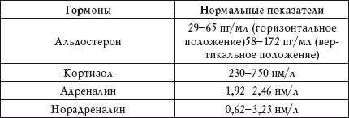
Альдостерон
Альдостерон регулирует водно-солевой обмен в организме.
Повышенный показатель
Повышение уровня альдостерона наблюдается при:
• беременности;
• рационе, бедном натрием;
• физическом переутомлении;
• сильном потоотделении;
• гиперплазии надпочечников;
• опухолях коры надпочечников;
• отеках и задержке в организме натрия, связанных с заболеваниями сердца, нефрозом, циррозом печени.
Пониженный показатель
Понижение уровня альдостерона наблюдается при:
• болезни Аддисона;
• гипофункции надпочечников;
• эмболии надпочечниковой артерии;
• тромбозе надпочечниковой вены;
• рационе, бедном калием;
• потреблении большого количества жидкости.
Кортизол
Кортизол усиливает образование глюкозы из аминокислот и белков, ограничивает синтез антител, а также снижает аллергические реакции.
Повышенный показатель
Повышение концентрации кортизола в крови наблюдается при:
• болезни Иценко – Кушинга;
• аденоме и раке надпочечников.
Пониженный показатель
Понижение концентрации кортизола в крови наблюдается при:
• болезни Аддисона;
• хронической надпочечниковой недостаточности.
Адреналин и норадреналин
Эти гормоны повышают артериальное давление, уровень глюкозы и холестерина в крови, учащают ритм сердечных сокращений, суживают периферические сосуды, тормозят моторику кишечника и усиливают поступление жирных кислот в кровоток.
Повышенный показатель
Повышение концентрации адреналина и нор-адреналина наблюдается при:
• физической и эмоциональной нагрузке;
• тиреотоксикозе;
• феохромоцитоме;
• синдроме Иценко – Кушинга;
• заболеваниях почек;
• гемолитической желтухе.
Пониженный показатель
Понижение концентрации адреналина и нор-адреналина наблюдается при:
• миастении;
• поражении гипоталамуса;
• синдроме Иценко – Кушинга.
Половые гормоны
Нормальные показатели содержания половых гормонов в крови приведены в таблице 33.
Таблица 33
Нормальные показатели содержания половых гормонов в крови
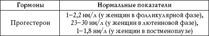
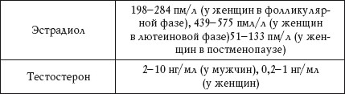
Эстрогены
Эстрогены – прогестерон и эстрадиол – обеспечивают развитие половых органов, продукцию половых клеток, формируют психофизиологические особенности полового поведения и влияют на все этапы беременности.
Повышенный показатель
Повышение концентрации эстрогенов наблюдается при:
• опухолях яичников;
• опухолях коры надпочечников.
Пониженный показатель
Понижение концентрации эстрогенов наблюдается при:
• склерозе яичников;
• недостаточном функционировании яичников;
• облучении;
• нарушении секреции гонадотропных гормонов.
Тестостерон
Тестостерон влияет на развитие половых органов, рост мышц и костей, формирование вторичных половых признаков.
Повышенный показатель
Повышение концентрации тестостерона наблюдается при:
• раннем половом созревании;
• гиперфункции надпочечников;
• опухолях яичек.
Пониженный показатель
Понижение концентрации тестостерона наблюдается при:
Эстрогены и тестостерон образуются как у женщин, так и у мужчин. В женском организме преобладают эстрогены, в мужском – тестостерон (андрогены).
• нарушении продукции гонадотропных гормонов;
• недостаточности семенников.
Анализ на хорионический гонадотропин
Хорионический гонадотропин (ХГ) – это особый гормон беременности, его вырабатывают клетки хориона (оболочки зародыша). С помощью анализа крови на ХГ можно определить беременность уже через 6—10 дней после оплодотворения. ХГ состоит из а– и b-ХГ. a-ХГ имеет схожее строение с гормонами
Уровень ХГ в крови у мужчин и небеременных женщин – менее 5 мЕд/мл.
ТТГ, ФСГ и ЛГ, а b-ХГ – уникальный гормон. Именно анализ на b-ХГ имеет решающее значение в подверждении беременности (табл. 34).
Таблица 34
Уровень ХГ при беременности
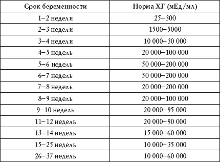
Уровень ХГ при беременности повышается постепенно. Он быстро нарастает в первом триместре, удваиваясь каждые 2-3 дня. Самый высокий уровень ХГ наблюдается на 10-12-й неделе беременности, затем он начинает медленно понижаться и остается постоянным во второй половине беременности.
Повышенный показатель у беременных
Повышение уровня ХГ при беременности наблюдается при:
• многоплодии;
• токсикозе;
• сахарном диабете;
• патологии развития плода, в том числе синдроме Дауна;
• приеме синтетических гестагенов.
Повышенный показатель у небеременных и у мужчин
Повышение уровня ХГ может наблюдаться при:
В течение 4-5 дней после аборта показатель ХГ в крови может быть повышен. Высокий уровень ХГ после миниаборта указывает на то, что беременность не прервана.
• опухолях яичек;
• онкологических заболеваниях желудочно-кишечного тракта, легких, почек, матки;
• пузырном заносе и рецидиве пузырного заноса;
• хорионкарциноме;
• приеме препаратов ХГ.
Пониженный показатель у беременных
Понижение ХГ при беременности наблюдается при:
• неразвивающейся беременности;
• внематочной беременности;
• задержке в развитии плода;
• угрозе выкидыша;
• хронической плацентарной недостаточности;
• перенашивании беременности;
• гибели плода.
Анализ РАРР-А
РАРР-А (ПАПП-А) – это белок, который вырабатывается плазмой при беременности. Анализ РАРР-А назначают, чтобы выявить риск отклонений в развитии ребенка на ранних сроках беременности. Как правило, его сдают с 11-й до 14-й недели беременности. На сроке более 14 недель анализ считается неинформативным. С помощью данного анализа можно оценить риск развития у ребенка синдрома Дауна и других хромосомных аномалий, а также угрозу выкидыша.
В низкой концентрации РАРР-А содержится в крови мужчин и небеременных женщин. У беременных уровень белка постепенно растет (табл. 35).
Таблица 35
Нормальные показатели РАРР-А при беременности
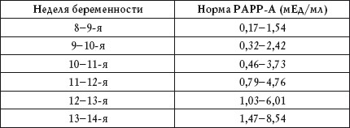
Пониженный показатель
Понижение уровня РАРР-А в крови наблюдается при:
• хромосомных аномалиях плода;
• синдроме Дауна;
• синдроме Корнелии де Ланге;
• замершей беременности;
• угрозе выкидыша;
• синдроме Эдвардса.
Отклонения в результатах анализа РАРР-А еще не свидетельствуют на 100% о наличии у плода патологии. Пониженный показатель является сигналом для проведения более серьезных исследований.
Анализ на эстриол
Эстриол – это женский половой гормон, который относится к эстрогенам. Этот гормон вырабатывает плацента, а затем печень плода. Концентрация эстриола в крови женщины возрастает с течением беременности.
Поскольку в образовании эстриола участвуют плацента и плод, уровень этого гормона (табл. 36) – идеальный показатель работы плацентарной системы. Анализ эстриола позволяет определить возможные нарушения в развитии плода.
Таблица 36
Нормальные показатели эстриола при беременности
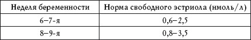
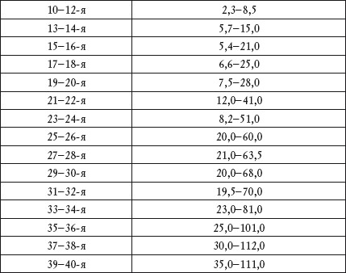
Пониженный показатель
Понижение уровня эстриола наблюдается при:
• угрозе выкидыша или преждевременных родов;
• перенашивании;
• синдроме Дауна;
• внутриутробной инфекции;
• гипоплазии надпочечников плода;
• анэнцефалии плода;
• фетоплацентарной недостаточности;
• приеме антибиотиков;
• многоплодной беременности.
Анализ на RW
Анализ крови на RW играет важную роль в диагностике сифилиса и проводится на разных стадиях заболевания. Реакция крови на RW дает представление о наличии и степени активности бледной трепонемы.
Анализ крови на RW является обязательным при госпитализации.
Результат бывает отрицательным или положительным. Отрицательный результат свидетельствует об отсутствии заболевания, положительный может иметь от одного до четырех крестов:
• + – сомнительная реакция;
• ++ – слабоположительная реакция;
• +++ – положительная реакция;
• ++++ – резко положительная реакция.
При сомнительной или слабоположительной реакции рекомендуется сдать повторный анализ, поскольку такой результат не всегда означает, что человек болен сифилисом: при тяжелых инфекциях, аллергических реакциях и при беременности анализ на сифилис может быть положительным. Подтвердить диагноз может только повторный анализ. Резко положительная реакция всегда указывает на наличие у человека сифилиса.
Группа крови и резус-фактор
На эритроцитах имеются специальные белки – антигены групп крови, к которым в плазме есть антитела. Взаимодействие одноименных антигена и антитела вызывает склеивание эритроцитов в столбики – в таком виде они не могут переносить кислород. Именно поэтому в крови одного человека не встречаются одноименные антиген и антитело. Их комбинация – это и есть группа крови. Ее учитывают при переливании крови. Как и все белки организма, антигены и антитела группы крови (не сама группа крови) передаются по наследству, поэтому их комбинация у детей может отличаться от комбинации у родителей (табл. 37). В диагностике пользуются определением группы крови по системе АВ0:
• группа крови I (0);
• группа крови II (А);
• группа крови III (В);
• группа крови IV (АВ).
Таблица 37
Группа крови. Наследование
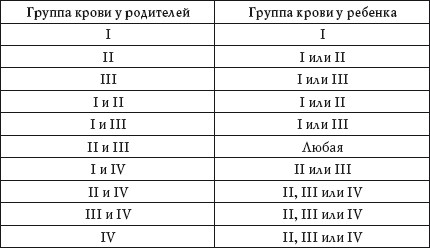
Если у одного из родителей I группа крови, у ребенка не может быть IV, а если IV – не может быть I.
Резус-фактор – это белок на мембране эритроцитов, который присутствует у 85% людей (их кровь называется резусположительной). У остальных 15% резус отсутствует (их кровь – резус-отрицательная). Ген резус-фактора (R) передается по наследству точно также, как и его отсутствие (г) (табл. 38).
Таблица 38
Резус-фактор. Наследование
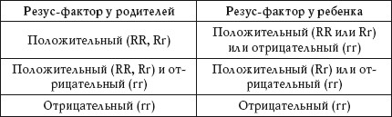
Групповая несовместимость и резус-конфликт при беременности
При беременности может возникнуть конфликт по группам крови: плод может вырабатывать антитела, если имеет антиген, которого нет у матери. Конфликт иногда возникает, если у плода II группа крови, а у матери – I или III; у плода III, у матери – I или II; у плода IV, у матери любая другая.
Резус-конфликт может возникнуть при беременности женщины с отрицательным резус-фактором крови, если плод имеет положительный резус-фактор. В этом случае при попадании эритроцитов плода в кровоток матери у нее образуются антирезусные антитела. В норме кровоток матери и плода смешивается только во время родов, но при некоторых патологиях резус-конфликт может возникнуть уже в первой половине беременности. Поэтому, если у женщины отрицательный резус-фактор, ей назначают анализ на антирезусные антитела на ранних сроках беременности.
Онкомаркеры
Онкомаркеры – это вещества, которые вырабатывают опухолевые клетки. В норме их вырабатывают клетки эмбриона, но поскольку у взрослого человека нет эмбриональных клеток, наличие этих веществ в организме может указывать на развитие опухоли. Различные новообразования выделяют разные маркеры, каждый из которых имеет свое название (табл. 39).
Таблица 39
Онкомаркеры. Нормальные показатели
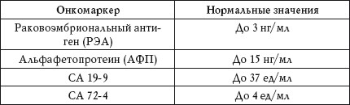
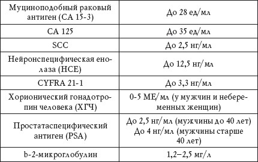
РЭА
Синтезируется в пищеварительном тракте плода. Как онкомаркер используется для диагностики и контроля за ходом лечения рака желудка, а также в качестве дополнения к анализу SCC.
Повышенный показатель
Повышение показателя РЭА наблюдается при:
• раке желудка;
• раке шейки матки;
• раке толстой и прямой кишки;
• раке поджелудочной железы;
• раке щитовидной железы;
• раке молочной железы;
• раке желудка;
• циррозе печени (до 10 нг/мл);
• хроническом гепатите (до 10 нг/мл);
• панкреатите (до 10 нг/мл);
• язвенном колите (до 10 нг/мл);
• пневмонии (до 10 нг/мл);
• бронхите (до 10 нг/мл);
• туберкулезе (до 10 нг/мл);
• муковисцидозе (до 10 нг/мл).
АФП
Этот белок вырабатывается в печени эмбриона и используется для диагностики пороков развития плода. В качестве онкомаркера применяется для диагностики и контроля за ходом лечения рака печени и половых органов.
Повышенный показатель
Повышение уровня АФП наблюдается при:
• метастазах рака в печень;
• первичном раке печени;
• раке яичек;
• раке яичника;
• раке желудка;
• раке толстой кишки;
• раке поджелудочной железы;
• раке молочной железы;
• опухоли бронхов;
• циррозе печени;
• хроническом гепатите;
• хроническом алкоголизме;
• хронической печеночной недостаточности.
Повышенный показатель во время беременности
Повышение уровня АФП во время беременности наблюдается при:
• многоплодной беременности;
• некрозе печени плода.
Пониженный показатель во время беременности
Понижение уровня АФП во время беременности наблюдается при:
• синдроме Дауна;
• пузырном заносе;
• задержке развития плода.
СА 19-9
Этот антиген синтезируется в печени и поджелудочной железе плода. Как онкомаркер используется для диагностики и контроля за ходом лечения рака поджелудочной железы и желудка.
Повышенный показатель
Повышение уровня СА 19-9 наблюдается при:
• раке поджелудочной железы;
• раке желчного пузыря и желчевыводящих путей;
• первичном раке печени;
• раке желудка;
• раке прямой и сигмовидной кишки;
• раке молочной железы;
• раке яичника;
• раке матки;
• циррозе печени;
• воспалительных заболеваниях желудочно-кишечного тракта и печени (до 500 Ед/мл, чаще – до 100 Ед/мл);
• муковисцидозе (до 100 Ед/мл).
СА 72-4
Повышенный показатель
Повышение уровня СА 72-4 наблюдается при:
• раке желудка;
• доброкачественных опухолях и воспалительных процессах (редко).
СА 15-3
Этот антиген синтезируется в альвеолах и протоках молочных желез и используется для диагностики рака молочной железы.
Повышенный показатель
Повышение уровня СА 15-3 наблюдается при:
• раке молочной железы;
• раке яичников;
• раке шейки матки;
• раке эндометрия;
• раке желудка;
• раке печени;
Физиологическое повышение уровня СА 15-3 наблюдается при беременности.
• раке поджелудочной железы;
• доброкачественных заболеваниях молочной железы;
• доброкачественных заболеваниях желудочно-кишечного тракта;
• хронических заболеваниях легких.
СА 125
Этот антиген синтезируется в клетках опухоли яичника. Также он присутствует в нормальном эндометрии, но попадает в кровь только при эндометриозе.
Повышенный показатель
Повышение уровня СА 125 наблюдается при:
• раке яичников;
• раке эндометрия;
• раке матки;
• раке молочной железы;
• раке поджелудочной железы;
• раке прямой и сигмовидной кишки;
Повышение уровня СА 125 может происходить во время менструации, при беременности, а также при панкреатите, гепатите и циррозе печени.
• раке желудка;
• эндометриозе;
• кисте яичников;
• почечной недостаточности.
SCC
Повышенный показатель
Повышение уровня SCC наблюдается при:
• раке шейки матки;
• почечной недостаточности (до 10 нг/мл).
НСЕ
Повышенный показатель
Повышение уровня HCE наблюдается при:
• раке легких;
• доброкачественных болезнях легких (до 20 нг/мл);
• поражениях нервной системы.
CYFRA 21-1
Повышенный показатель
Повышение уровня CYFRA 21-1 наблюдается при раке легких.
ХГЧ
Повышенный показатель
Повышение уровня ХГЧ у мужчин и небеременных женщин наблюдается при:
• раке яичек;
• раке яичников;
• хорионкарциноме;
• пузырном заносе;
• раке желудка;
• раке печени;
• раке толстой и тонкой кишки;
• раке матки;
• раке почек.
Повышение уровня ХГЧ наблюдается при беременности, а также у женщин с миомой или кистой яичника (в менопаузе).
Повышенный показатель
Повышение уровня PSA наблюдается при:
• раке предстательной железы;
• доброкачественной гиперплазии предстательной железы (до 10 нг/мл);
• раке прямой и сигмовидной кишки;
• раке почек;
• простатите(до 10 нг/мл).
Уровень PSA может увеличиться после ректального обследования,цистоскопии, трансуретральной биопсии и лазерной терапии. При доброкачественной гиперплазии простаты уровень PSA изменяется следующим образом: 50-59 лет – до 2,9 нг/мл, 60-69 лет – до 3,9 нг/мл, 70-79 лет – до 4,8 нг/мл, 80 лет и старше – до 8,8 нг/мл.
b-2-микроглобулин
Повышенный показатель
Повышение уровня b-2-микроглобулина наблюдается при:
• аутоиммунных заболеваниях;
• СПИДе;
• состояниях после трансплантации органов.
Коагулограмма
Данные этого анализа складываются из различных тестов. Их количество меняется в зависимости от целей исследования. Различают полную и сокращенную коагулограмму, а также отдельные тесты.
Нормальные показатели коагулограммы приведены в таблице 40.
Таблица 40
Коагулограмма. Нормальные показатели
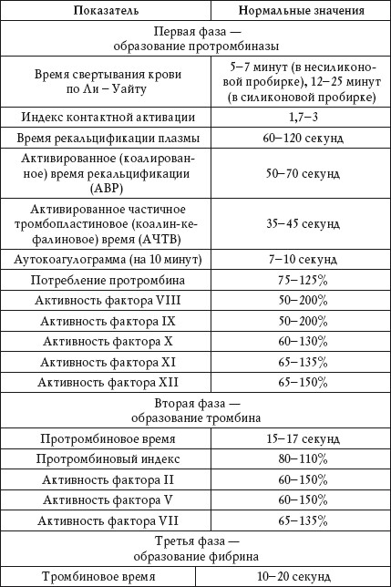
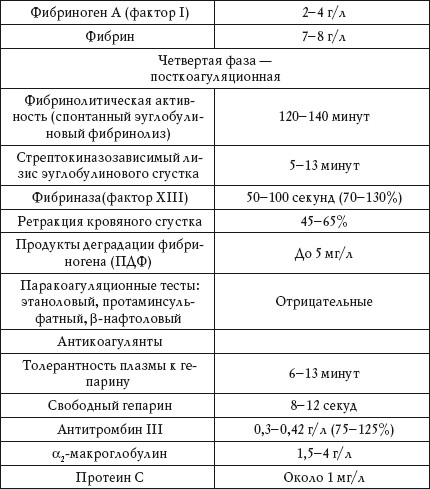
Время свертывания крови по Ли – Уайту
Это время, прошедшее с момента взятия крови до момента ее свертывания, которое зависит от активности плазменных факторов и тромбоцитов, а также от состояния сосудистой стенки.
Повышенный показатель
Повышенный показатель (время удлинено) наблюдается при:
• тромбоцитопатии;
• избытке антикоагулянтов;
• дефиците факторов свертывания крови;
• постгеморрагической анемии.
Несвертывание крови
Несвертывание крови наблюдается при афибриногемии, то есть при содержании фибриногена менее 1 г/л.
Индекс контактной активации
Это соотношения времени свертывания крови по Ли – Уайту в силиконовой и несиликоновой пробирках.
Повышенный показатель
Повышенная контактная активация наблюдается при:
• нарушении функций печени;
• недостатке факторов Хагемана, Флетчера и Фитцжеральда;
• избытке антикоагулянтов.
Материалом для анализа служит плазма.
Пониженный показатель
Пониженная контактная активация наблюдается при гиперкоагуляционной фазе ДВС-синдрома.
Время рекальцификации плазмы
Это время свертывания крови после добавления к ней определенного количества хлорида кальция.
Повышенный показатель
Повышенный показатель (время удлинено) наблюдается при:
• тромбоцитопении;
• наличии антикоагулянтов;
• недостатке факторов свертывания.
Пониженный показатель
Пониженный показатель (время укорочено) наблюдается при:
• тромбозе;
• ДВС-синдроме;
• эритроцитозе.
Активированное время рекальцификации
Это время свертывания крови после добавления к ней определенного количества хлорида кальция в условиях стандартизации коалином.
Повышенный показатель
Повышенный показатель (время удлинено) наблюдается при:
• тромбоцитопении;
• наличии антикоагулянтов;
• недостатке факторов свертывания.
Пониженный показатель
Пониженный показатель (время укорочено) наблюдается при:
• тромбозе;
• ДВС-синдроме;
• эритроцитозе.
Активированное частичное тромбопластиновое время
Повышенный показатель
Повышенный показатель (время удлинено) наблюдается при:
• ДВС-синдроме;
• циррозе;
• жировой дистрофии печени;
• гемофилии;
• наличии антикоагулянтов.
Если добавление 10%-ной донорской плазмы нормализует АЧТВ при повышенном показателе, это указывает на нехватку плазменных факторов.
Пониженный показатель
Пониженный показатель (время укорочено) наблюдается при:
• попадании тканевого тромбопластина в пробирку (нарушение техники взятия крови);
• повышенной свертываемости крови.
Основные типы коагулограмм (по Е. П. Иванову)
Показатели основных типов коагулограмм приведены в таблице 41.
Таблица 41
Основные типы коагулограмм
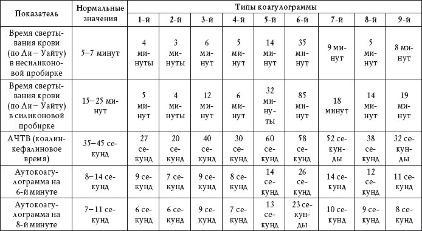
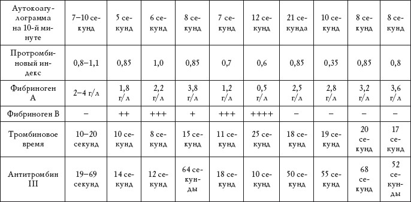
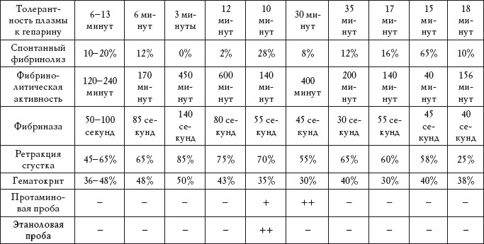
Результаты исследования фибриногена А, а также протаминовой и этаноловой проб обозначаются знаком «+».
1-й тип (снижение антикоагулянтных свойств крови):
Коагулограмма 1-го типа наблюдается при:
• состояниях после хирургического вмешательства (особенно у людей старше 35 лет и у больных с гнойными осложнениями);
• состояниях после родов у женщин с гипертонией или флеботромбозом.
2– й тип (гиперкоагуляция)
Коагулограмма 2-го типа наблюдается при:
• тромбоэмболии легочной артерии;
• инфаркте миокарда;
• остром артериальном тромбозе нижних конечностей;
• гиперкоагуляционной фазе ДВС-синдрома.
3– й тип
Коагулограмма 3-го типа наблюдается при:
• резкой депрессии фибринолиза;
• развивающейся тромбонемии на фоне гиперфибриногемии.
4– й тип
Коагулограмма 4-го типа наблюдается при гиперкоагуляционной фазе ДВС-синдрома с признаками гиперкоагуляции в первой фазе.
5-й тип
Коагулограмма 5-го типа наблюдается при острой приобретенной гипофибриногемии с расстройством фаз свертывания при ДВС-синдроме.
6-й тип (гипокоагуляция)
Коагулограмма 6-го типа наблюдается при:
• гемофилии;
• лечении гепарином.
7-й тип
Коагулограмма 7-го типа наблюдается при:
• врожденном дефиците факторов свертывания с поражением паренхимы печени;
• гиповитаминозе К;
• лечении непрямыми антикоагулянтами.
Для анализа состояния свертывающей системы крови используют тромбоэластографы и коагулографы.
8-й тип
Коагулограмма 8-го типа наблюдается при:
• заболеваниях крови;
• лечении фибринолитическими препаратами;
• шоковых состояниях.
9-й тип
Коагулограмма 9-го типа наблюдается при:
• тромбоцитопении;
• тромбоцитопатии.
Протромбин
Нормальные показатели анализа на протромбин приведены в таблице 42.
Таблица 42
Протромбин. Нормальные значения
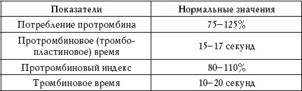
Потребление протромбина
Это показатель соотношения протромбинового времени сыворотки крови больного с протромбиновым временем плазмы донора.
Если нарушено образования протромбиназы,протромбин не полностью превращается в тромбин, а остается в сыворотке крови. О протромбинообразовании судят по количеству оставшегося протромбина.
Пониженный показатель
Понижение значения потребления протромбина наблюдается при:
• наличии антикоагулянтов;
• гемофилии.
Протромбиновое время и протромбиновый индекс
Это показатель внешней системы активации протромбина в условиях избытка кальция и тромбопластина. Протромбиновое время зависит от фибрингена и плазменных факторов.
Чтобы исключить зависимость от активности использованного тромбопластина, протромбиновое время представляют как протромбиновый индекс, для вычисления которого протромбиновое время пациента делят на протромбиновое время донора, а затем умножают на 100%.
Повышенный показатель
Увеличенный протромбиновый индекс наблюдается при:
• хронических болезнях печени;
• механической желтухе;
• хроническом панкреатите;
• врожденной гипопротромбинемии;
• поздних стадиях ДВС-синдрома;
• недостатке витамина К;
• наличии антикоагулянтов;
• дисфибриногенемии.
Пониженный показатель
Уменьшенный протромбиновый индекс наблюдается при:
• тромбозе;
• травмах;
• некрозе;
• состоянии гиперкоагуляции;
• злокачественных новообразованиях;
• беременности;
• родах.
Тромбиновое время
Это показатель перехода фибриногена в фибрин – время образования сгустка плазмы при добавлении к ней стандартного раствора тромбина.
Показатель зависит от концентрации фибриногена и процессов его полимеризации.
Тромбиновое время не зависит от механизма активации протромбина.
Повышенный показатель
Увеличенное тромбиновое время наблюдается при:
• ДВС-синдроме;
• гепатите;
• циррозе печени;
• гипофибриногенемии;
• наличии ингибиторов свертывания крови.
Пониженный показатель
Уменьшенное тромбиновое время наблюдается при:
•парапротеинемии;
• гиперфибриногенемии.
Несвертываемость плазмы
Плазма не свертывается при:
• моноклональных гаммапатиях;
• наличии ингибиторов свертывания крови;
• гипофибриногенемии.
Фибриноген и фибрин
Нормальные показатели анализа на фибриноген и фибрин приведены в таблице 43.
Таблица 43
Фибриноген и фибрин. Нормальные показатели
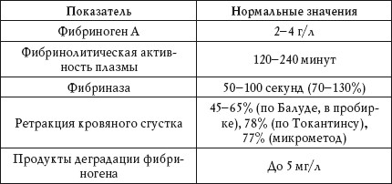
Фибриноген
Фибриноген – фактор свертывания крови – вырабатывается паренхиматозными клетками печени и под действием тромбина превращается в фибрин (нерастворимый белок), основной субстрат тромба.
Повышенный показатель
Повышенное значение фибриногена наблюдается при:
• воспалительных и некротических процессах;
• лихорадке;
• инфекционных заболеваниях;
Физиологическое повышение значения фибриногена наблюдается при беременности и во время менструации.
• ожогах;
• травмах;
• хирургических вмешательствах;
• диффузных болезнях соединительной ткани;
• нефрите;
•уремическом синдроме;
• инфаркте миокарда;
• лучевой болезни;
• пароксизмальной ночной гемоглобинурии;
• злокачественных опухолях.
Пониженный показатель
Пониженное значение фибриногена наблюдается при:
• циррозе печени;
• отравлении гепатотропными ядами;
• врожденном дефиците фибриногена;
• ДВС-синдроме;
• состояниях после кровотечения;
• ожогах;
• травмах;
• шоковых состояниях;
• кахексии;
• цинге;
• тяжелом токсикозе беременных;
• укусе змей;
• эмболии околоплодными водами;
• действии фенобарбитала, урокиназы и стрептокиназы.
Фибринолитическая активность плазмы
Фибринолитическая активность освобожденной от ингибиторов плазмы – это время, которое необходимо для полного растворения сгустка.
Время устанавливается по лизису эуглобулиновой фракции.
Повышенный показатель
Удлинение времени фибринолитической активности наблюдается при:
• тромбозе;
• геморрагическом васкулите;
• апластических процессах кроветворения.
Пониженный показатель
Сокращение времени фибринолитической активности наблюдается при:
• ДВС-синдроме;
• циррозе печени;
• хирургических операциях на легких, матке, простате, мозге);
• осложнениях после родов;
• шоковых и стрессовых состояниях;
• ацидозе;
• гипоксии;
• сильных физических нагрузках.
Фибриназа
Это фермент, который принимает участие в образовании фибринового сгустка.
Повышенный показатель
Повышение показателя фибриназы (снижение активности) наблюдается при:
• гепатите;
• циррозе печени;
• болезни Лаки – Лорана;
• раке с метастазированием в печень;
• лучевой болезни;
• ДВС-синдроме;
• сепсисе;
• миелолейкозе;
• тяжелых операциях.
Пониженный показатель
Понижение показателя фибриназы (повышение активности) наблюдается при большом объеме плазмотрансфузий.
Ретракция кровяного сгустка
Это самопроизвольное отделение сыворотки крови от ее сгустка при отстаивании.
Повышенный показатель
Повышенный показатель ретракции кровяного сгустка наблюдается при:
• анемии;
• гиперфибриногемии.
Пониженный показатель
Пониженный показатель ретракции кровяного сгустка наблюдается при:
• эритремии;
• увеличении гематокрита;
• тромбоцитопении;
• болезни Верльгофа;
• геморрагической алейкии Франка.
Продукты деградации фибриногена
Повышенный показатель
Наличие продуктов деградации фибриногена наблюдается при:
• ДВС-синдроме;
• тромбозе;
• инфаркте миокарда;
• легочной эмболии;
• лейкозе;
• злокачественных опухолях;
• почечной недостаточности;
• болезнях печени;
• состояниях после хирургического вмешательства;
• лечении фибринолитическими препаратами.
Для исследования ретракции кровяного сгустка берут венозную кровь, а для определения продуктов деградации фибриногена – свежую сыворотку с добавлением ингибиторов фибринолиза.
Лимфаденограмма
Лимфаденограмма (табл. 44) – анализ крови из лимфоузла – является дополнительным методом исследования заболеваний системы крови. Анализ назначают при болезнях, сопровождающихся увеличением лимфатических узлов.
Таблица 44
Лимфаденограмма. Нормальные показатели
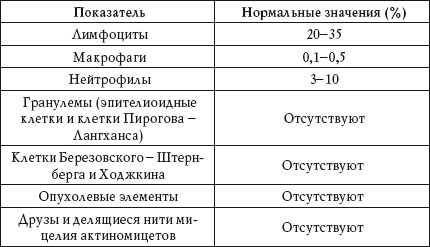
Лимфоциты
Повышенный показатель
Лимфоцитоз наблюдается при:
• инфекционном мононуклеозе;
• гриппе;
• аденовирусных инфекциях;
• лимфаденитах.
Макрофаги
Повышенный показатель
Повышенный показатель макрофагов наблюдается при хроническом воспалительном процессе.
Нейтрофилы
Повышенный показатель
Нейтрофилез наблюдается при:
• специфическом воспалении;
• остром нагноении.
Гранулемы
Положительный результат
Наличие в анализе гранулем наблюдается при:
• туберкулезе;
• бруцеллезе;
• сифилисе;
• туляремии;
• саркоидозе;
• болезни Крона.
Клетки Березовского – Штернберга и Ходжкина
Положительный результат
Наличие в анализе клеток Березовского -Штернберга и Ходжкина наблюдается при лимфогранулематозе.
Опухолевые элементы
Положительный результат
Наличие в анализе опухолевых элементов наблюдается при:
• лимфосаркоме;
• метастазах злокачественных опухолей.
Друзы и делящиеся нити мицелия актиномицетов
Положительный результат
Наличие в анализе друз и делящихся нитей мицелия актиномицетов наблюдается при нагноении, связанном с актиномикозом лимфатических узлов.
Вирусный гепатит
Вирусный гепатит – это несколько заболеваний с похожими смптомами.
Вирус гепатита А передается через немытые руки. Остальные вирусы гепатита относятся к сывороточным: они передаются через кровь, а также половым путем и внутриутробно. Болезнь вызывает хронический воспалительный процесс в печени и может привести к циррозу или раку печени.
Гепатит А не переходит в хроническую форму и потому не вызывает цирроза и рака печени. Против гепатита А и В существуют вакцины,против гепатита С – нет.
Вирус гепатита В имеет несколько антигенов, антитела к которым определяются для диагностики остроты и активности процесса, а также для оценки эффективности лечения и напряженности иммунитета. Гепатит В передается внутриутробно, половым путем, а также через сыворотку крови. Вирус гепатита С передается через сыворотку крови (реже половым путем и внутриутробно).
Вирус гепатита D (дельта) не существует в самостоятельной форме – он сочетается с вирусом гепатита В, усугубляя течение заболевания.
Скрининговое исследование на гепатит В (HbsAg)
Поверхностный антиген вируса – австралийский антиген.
При персистировании инфекции ее первый маркер остается положительным.
Антитела к поверхностному антигену вируса гепатита В (Анти-Hbs)
Антитела образуются через несколько недель после проявления HbsAg, то есть происходит выработка защитного иммунитета. Чтобы оценить естественный иммунитет, проводят качественный анализ, а для оценки напряженности прививочного иммунитета – количественный.
Антитела к внутреннему (ядерному) белку вируса гепатита В (Анти-Hbc суммарные, IgM)
Это основной анализ в диагностике гепатита В, он может быть положительным при отсутствии HbsAg. Суммарные антитела могут быть положительными даже после перенесенного заболевания. Положительный анализ на IgM наблюдается только при остром гепатите.
Исследование антигена Е вируса гепатита В и антител к нему (HbeAg, Анти-Hbe)
Это исследование назначают больным с длительно положительным HbsAg. Антиген Е появляется в крови при активном размножении вируса, антител к нему нет. Антитела появляются после перехода вируса в неактивное состояние и исчезновения антигена.
Исследование антигена Е вируса гепатита В и антител к нему помогает оценить эффективность лечения.
Антитела к вирусу гепатита С (Анти-HCV суммарные, IgM)
Наличие антител к вирусу гепатита С не свидетельствует защитном иммунитете – этот анализ помогает поставить правильный диагноз.
Отрицательный анализ не означает отсутствия инфекции.
При положительном результате проводят поиск антигена РНК-вируса.
Наличие IgM указывает на острое течение болезни.
Суммарные антитела к вирусу гепатита А (Анти-HAV суммарные, IgM)
Наличие в анализе IgG указывает на иммунитет к ранее перенесенному гепатиту А или бессимптомное носительство вируса, а присутствие IgM – на острое течение заболевания.
Суммарные антитела к вирусу гепатита D (Анти-HDV суммарные, IgM)
Наличие суммарных антител не всегда указывает на острое течение заболевание – поставить точный диагноз позволяет только анализ на антиген вируса. Присутствие IgM свидетельствует об обострении болезни.
ВИЧ
Анализ на антитела к вирусу иммунодефицита человека – это скрининговое исследование, позволяющее выявить ВИЧ-инфекцию. Диагностировать и прогнозировать развитие СПИДа с помощью данного анализа невозможно, поскольку ВИЧ-инфекция может переходить в СПИД в течение многих лет.
Антитела, как правило, появляются на 412-й неделе инфицирования, а иногда позже. Отрицательный результат не означает отсутствия ВИЧ-инфекции. Повторный положительный анализ, указывающий на присутствие антител, свидетельствует о ВИЧ-инфекции.
Краснуха
Этот вирус передается воздушно-капельным путем, после заболевания образуется пожизненный иммунитет. От краснухи существует прививка, которую делают каждые 10-12 лет.
Чтобы точно определить, есть ли у человека иммунитет к краснухе, делают анализ – определяют титры антител в сыворотке крови (табл. 45).
Таблица 45
Анализ на вирус краснухи
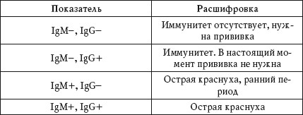
Динамику инфекции отслеживают по снижению количественных титров IgM и повышению IgG. На острый процесс указывает IgM+, IgG+.
Токсоплазмоз
Токсоплазмоз – это болезнь, которая вызывается простейшими микроорганизмами. Заражение человека может произойти через экскременты кошек или через зараженные токсоплазмой продукты питания (мясо и молоко). Как правило, заболевание протекает бессимптомно, диагноз ставится по титрам антител (табл. 46).
Таблица 46
Анализ на токсоплазмоз
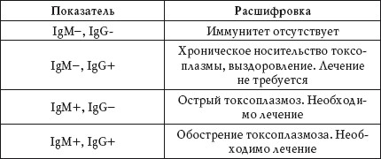
Токсаплазмоз во время беременности може привести к развитию множественных пороков у плода и даже к его гибели.
Инфекционный мононуклеоз
Инфекционный мононуклеоз вызывается вирусом Эпштейна-Барр и часто протекает в скрытой форме. Обострение болезни, как правило, бывает однократным, после чего появляется стойкий иммунитет. Диагноз ставится по титрам антител (табл. 47).
Таблица 47 Анализ на инфекционный мононуклеоз
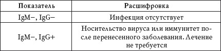
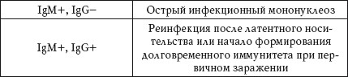
Герпес
Герпес относится к хроническим инфекциям (после первичного заражения присутствует в организме постоянно) и вызывается двумя типами вируса: I-й тип – простой герпес и II-й тип – половой герпес.
Лечение требуют только клинические проявления герпеса, то есть обострение заболевания.
Диагноз ставится по титрам антител (табл. 48).
Таблица 48
Анализ на вирус герпеса
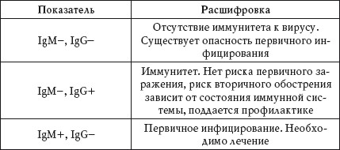
Цитомегаловирус
Цитомегаловирус присутствует в организме большинства взрослых людей. Клиническое значение имеет только у людей с иммунодефицитом, а также во время беременности. В последнем случае существует опасность первичного инфицирования плода.
В других ситуациях нет необходимости делать анализ на цитомегаловирус (табл. 49).
Таблица 49
Анализ на цитомегаловирус
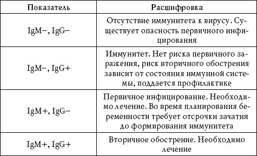
Хламидиоз
Хламидиоз – это инфекционное заболевание, передающееся половым путем. Относится к так называемым скрытым инфекциям, поскольку в большинстве случаев протекает бессимптомно. Со временем заболевание переходит в хроническую форму.
Диагноз ставится на основании обнаружения антител в крови (табл. 50) и ДНК возбудителя в половых путях (метод ПЦР).
Таблица 50
Анализ на хламидиоз
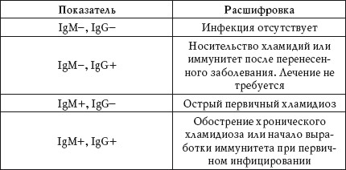
Микоплазмози уреаплазмоз
Микоплазмы и уреаплазмы являются условными патогенами, то есть их присутствие в организме не требует срочного лечения. Лечение необходимо только при выявлении острого процесса при планировании или во время беременности. Диагноз ставится по титрам антител (табл. 51).
Таблица 51
Анализ на микоплазмоз и уреаплазмоз
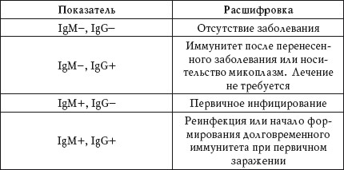
Пневмоцистоз
Пневмоциста – это возбудитель пневмонии у людей с иммунодефицитом, а также у детей.
Около 10% здоровых людей являются носителями пневмоцист.
Относится к условным патогенам.
Диагноз ставится по титрам антител (табл. 52).
Таблица 52
Анализ на пневмоцистоз
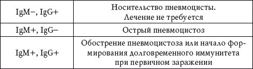
Паротит
Паротит – это вирусное заболевание, симптомами которого являются повышение температуры тела, увеличение одной или нескольких слюнных желез, поражение центральной нервной системы. Источником инфекции является больной человек.
Анализ на паротит и корь берут натощак. Материалом для исследования служит венозная кровь.
Наличие в крови ANTI-MUMPS IgG указывает на перенесенное заболевание, а ANTI-MUMPS IgM – на острый вирусный паротит.
Корь
Корь – это вирусное заболевание, симптомами которого являются повышение температуры тела, вялость, слабость, головные боли, кожная сыпь, насморк и поражение конъюнктивы. Источником инфекции является больной человек. Наличие в крови ANTI – MEASLES VIRUS lgG указывает на перенесенное заболевание, а ANTI – MEASLES VIRUS lgM – на острый период кори.
Лямблиоз
Лямблиоз – широко распространенное протозойное заболевание, возникающее вследствие поражения тонкого кишечника и печени лямблиями. Наличие в крови ANTI – GIARDIA LAMBLIA lgG и ANTI – GIARDIA LAMBLIA IgM указаывает на лямблиоз.
Амебиаз
Амебиаз – это тяжелое заболевание, вызываемое дизентерийной амебой (Entamoeba histolytica), которая поражает слизистую оболочку кишечника. Наличие в крови ANTI-ENTAMOEBA HYSTOLITICA указывает на амебиаз.
Кандидоз
Кандидоз – это воспалительное заболевание, которое вызывается дрожжеподобными грибами рода Candida.
Основные симптомы у женщин:
• зуд и жжение в области наружных половых органов;
• покраснение и отек слизистой влагалища;
• боли при половом акте;
• жжение или боль при мочеиспускании. Основные симптомы у мужчин:
• зуд и жжение в области крайней плоти и головки полового члена;
• покраснение головки полового члена и белый налет на ней;
• боли при половом акте;
• жжение или боль при мочеиспускании.
Диагноз ставится на основании обнаружения антител в крови и ДНК возбудителя в половых путях (метод ПЦР). Наличие IgG в крови указывает на системный кандидоз (специфичность и чувствительность теста составляет около 80%). Отрицательный результат анализа свидетельствует об отсутствии глубокого кандидоза.
Серологические тесты являются важным дополнением к микробиологическим исследованиям.
Генетические исследования
Исследование кариотипа
Кариотип – это исследование хромосом соматических клеток организма на стадии метафазы деления. Основой хромосом является ДНК – носитель генетической информации. Вне процесса деления клеток хромосомы находятся в ядре клетки, поэтому исследовать их сложно.
Нормальный кариотип мужчины – 46, XY, женщины – 46, XX.
Данный анализ не рекомендуется сдавать натощак. За месяц до исследования необходимо воздержаться от приема антибиотиков.
Исследование кариотипа проводят у супружеских пар с бесплодием или привычным невынашиванием беременности, а также у имеющих ребенка (детей) с каким-либо хромосомным синдромом.
Помимо этого, исследование кариотипа рекомендуется при:
• недостаточном весе ребенка при доношенной беременности (внутриутробная гипотрофия);
• наличии у ребенка пороков развития двух и более органов или систем;
• недифференцированной олигофрении у ребенка;
• наличии у ребенка недифференцированной олигофрении наряду с пороками развития наружных и внутренних органов и (или) дисморфическими чертами лица;
• наличии у ребенка недифференцированной олигофрении с присутствием более 5 малых аномалий развития.
Генетический маркер риска нарушений липидного обмена – аллельный полиморфизм гена аполипопротеина Е (ApoE)
Анализ аллельного полиморфизма гена ApoE позволяет определить риск развития ишемической болезни сердца вследствие дисбаланса обмена липидов.
Ген ApoE кодирует аминокислотную последовательность белка аполипопротеина Е, который образуется в печени и головном мозге и играет большую роль в липидном обмене. Аполипопротеин Е входит в состав хиломикронов и липопротеинов очень низкой плотности
Между последним приемом пищи и сдачей крови на исследование аллельного полиморфизма гена ApoE должно пройти не менее 8-12 часов. В течение этого времени можно пить только воду.
(ЛПОНП). Он способствует их удалению из крови путем взаимодействия со специфическим рецептором на поверхности клеток печени. В головном мозге аполипопротеин Е доставляет холестерин от глиальных клеток мозга к нейронам.
Исследование аллельного полиморфизма гена ApoE рекомендуется при:
• нарушении липидного обмена;
• решении вопроса целесообразности лечения статинами;
• риске сердечно-сосудистых заболеваний;
• подборе диеты.
Различают три аллельных варианта гена ApoE: *2, *3, *4.
Вариант *3 является самым распространенным.
Вариант *2 в гетерозиготном состоянии связан со снижением уровня холестерина и в-липополипротеинов в крови.
У долгожителей (табл. 53) этот вариант встречается чаще. В гомозиготном состоянии вариант *2 встречается редко. У таких людей уровень липидов в плазме крови значительно увеличивается только после приема пищи. Приблизительно у1 из 50 носителей сочетания *2/*2 развивается гиперлипопротеинемия III типа. Такие люди очень чувствительны к диетотерапии, однако некоторым из них необходимо медикаментозное лечение.
Таблица 53
Частота аллелей ApoE в европейской популяции
Вариант *4 связан с повышенным уровнем общего холестерина и в-липополипротеинов, а также со снижением антиоксидантной клеточной активности.
Этот вариант указывает на риск развития сердечно-сосудистых заболеваний и болезни Альцгеймера. Генотип *4/*4 встречается у долгожителей.
Генетический маркер риска нарушени обмена варфарина – полиморфизмы R144C С-> (CYP2C9*2) и I359L (CYP2C9*3) ген цитохрома CYP2C
Анализ полиморфизма R144C C->T (CYP2C9*2) гена цитохрома CYP2C9 помогает определить риск онкологических заболеваний, подобрать оптимальную дозу лекарств (варфарина, аценокумарола, толбутамида, лозартана, глипизида, фенитоина, ибупрофена) при антикоагуляционной терапии, а также оценить вероятность развития патологии у потомства.
Исследование полиморфизма R144C C->T (CYP2C9*2) гена CYP2C9 рекомендуется при:
• плановом назначении варфарина;
• кровотечениях, связанных с приемом варфарина, у больного или его родственников (I и II степени родства);
Риск полиморфизма Т/Т у потомства: при генотипе обоих родителей Т/Т – 100%, при генотипе родителей Т/Т и С/Т – 50%, при генотипе обоих родителей С/Т – 25%.
• невынашивании беременности;
• отслойке плаценты и других осложнениях, связанных с беременностью.
Результаты исследования:
• С/С – нормальный полиморфизм в гомозиготной форме;
• С/Т – гетерозиготная форма полиморфизма;
• Т/Т – мутантный вариант полиморфизма в гомозиготной форме.
Генетический маркер риска развития остеопороза – полиморфизм 13910 С/Т гена лактазы (LPH)
Анализ полиморфизма 13910 С/Т гена лактазы (LPH) помогает выявить лактозную непереносимость и оценить риск развития остеопороза.
Аминокислотную последовательность лактазы кодирует ген LPH. Лактаза вырабатывается в тонком кишечнике и участвует в расщеплении лактозы – молочного сахара. Лактаза, как правило, присутствует в организме детей. У некоторых взрослых этот фермент перестает вырабатываться. В этом случае употребление молочных продуктов приводит к расстройствам пищеварения. Человек отказывается от молочных продуктов, что часто приводит к дефициту кальция в организме. Это крайне неблагоприятно для женщин, находящихся в постменопаузе, поскольку приводит к развитию остеопороза.
Исследование полиморфизма 13910 С/Т гена лактазы (LPH) рекомендуется при:
• непереносимости молочных продуктов;
• определении риска развития остеопороза;
• оценке вероятности непереносимости молочных продуктов у детей старше 1,5 года.
Результаты исследования:
• С/С – нормальный вариант полиморфизма в гомозиготной форме. Непереносимость лактозы у взрослых;
• С/Т – гетерозиготная форма полиморфизма;
• Т/Т – мутантный вариант полиморфизма в гомозиготной форме. Хорошая переносимость лактозы у взрослых.
На выработку лактазы у взрослых влияет полиморфизм 13910 С/Т гена лактазы (LPH). При этом нормальный вариант полиморфизма С связан со снижением выработки лактазы у взрослых, а мутантный вариант Т – с сохранением повышенного синтеза этого фермента. Получается, что в организме гомозиготных носителей варианта С лактоза не усваивается, тогда как носители гомозиготоного варианта Т спокойно питаются молочными продуктами.
Установление биологического родства
Для разрешения спорных случаев биологического происхождения детей проводят молекулярно-генетическое исследование. Его целью является установление родственных связей между предполагаемыми родителями (отцом или матерью) и ребенком или, напротив, их исключение. Генетическое установление родства основано на принципах хранения и передачи наследственной информации, которая записана в молекуле ДНК.
ДНК присутствует в ядре каждой клетки организма человека и находится в хромосомах. В каждой клетке имеется по 22 пары хромосом, которые называются аутосомами, и по 2 половые хромосомы. При этом одну из парных хромосом человек получает от матери, а другую – от отца. Половые хромосомы ребенок тоже получает от родителей: Х-хромосому от матери, а Y-хромосому (рождается мальчик) или Х-хромосому (рождается девочка) от отца.
Для установления биологического родства из биоматериала (в большинстве лабораторий у обследуемых лиц берут анализ крови) выделяют ДНК, а затем с помощью локус-специфичной ПЦР искусственно увеличивают в миллионы раз число копий аллелей по исследуемым локусам. После этого копии аллелей разделяют и идентифицируют, сравнивая аллели ребенка и предполагаемых родителей.
На хромосомах, полученных от родителей (гомологичных хромосомах), расположен двойной комплект генов – тех участков ДНК, на которых записан код организма.
В ДНК есть еще и другие участки, которые ничего не кодируют. При этом в каждой гомологичной паре хромосом гены и пустые участки ДНК находятся в одних и тех же местах – локусах. Правда, последовательность расположенных в одних и тех же локусах нуклеотидов может различаться. Неодинаковые последовательности, расположенные в локусах отцовской и материнской хромосом, называются аллелями. Человек с одинаковыми аллелями является гомозиготным по данным локусам, а тот, у которого аллели отличаются, – гетерозиготным.
Как правило, локусы представлены двумя различными аллелями, но у людей одному и тому же локусу могут соответствовать десятки аллелей. Аллели, которые в большом разнообразии присутствуют у людей, называют высокополиморфными. Чем больше исследуется локусов с высокополиморфными аллелями, тем точнее становится молекулярная картина человеческого организма.
Генетический анализ на установление биологического родства следует отложить, если кому-либо из обследуемых в последние 6 месяцев проводилась трансплантация мозга или переливание крови.
При установлении материнства или отцовства исследуется максимальное количество локусов с высокополиморфными аллелями. В генотипе ребенка в любом из исследуемых локусов одна из аллелей всегда совпадает с аллелью, полученной от матери, в другой – с аллелью, полученной от отца. На этом и основывается методика генетического исследования биологического родства – аллели ребенка сравнивают с аллелями предполагаемых родителей. Если в анализе ребенка отсутствуют как минимум две аллели, совпадающие с аллелями предполагаемого родителя по одноименному хромосомному локусу, родство исключается.
В большинстве лабораторий для установления биологического родства используют анализ STR-локусов – участков ДНК длиной от 2 до 5 нуклеотидов. Эти участки могут повторяться. При этом число повторов может отличаться в аллелях для однотипных локусов. Аллели STR-локусов являются высокополиморфными, и установление отцовства (материнства) по ним снижает вероятность случайных совпадений генетических данных у обследуемых людей, поскольку таких локусов очень много.
К тому же они равномерно распределены по всем хромосомам.
Чтобы увеличить достоверность исследования (точность не менее 99,9%), биоматериал рекомендуется сдавать не только предполагаемому родителю, но и тому, родство с которым бесспорно. При отсутствии материала анализа от одного из родителей вероятность результата составляет 99,75%.
Иммунологические исследования
Иммуноглобулины класса A (IgA)
Это основной вид антител, участвующих в местном иммунитете. Сывороточный IgA синтезируется плазмоцитами и является фракцией гамма-глобулинов. В сыворотке крови 90% IgA представлено мономерными молекулами. В основном IgA присутствует на поверхности слизистых оболочек, а также в молозиве, молоке, слюне, желчи, моче, бронхиальном, желудочно-кишечном и слезном секрете.
В первые дни жизни ребенка IgA поступает в его организм с молозивом матери.
Основная функция сывороточного IgA – нейтрализация вирусов. IgA защищает желудочно-кишечный тракт, мочеполовые и дыхательные пути от проникновения инфекции.
Анализ на IgA рекомендуется при:
• рецидивирующих бактериальных респираторных инфекциях, а также отите и менингите;
• бронхиальной астме;
• хронической диарее;
• синдроме Луи-Бара;
• миеломе;
• лейкозах;
• ретикулосаркоме;
• ревматоидном артрите;
• системной красной волчанке;
• дерматомиозите;
• хроническом гепатите;
• циррозе печени.
Нормальные показатели уровня IgA приведены в таблице 54.
Таблица 54
Уровень IgA в крови. Нормальные значения
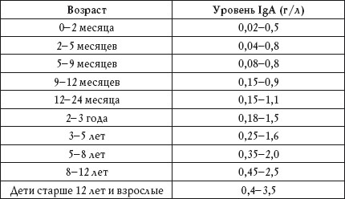
Повышенный показатель
Повышение уровня IgA наблюдается при:
• муковисцидозе;
• алкоголизме;
• энтеропатии;
• множественной миеломе IgA-типа;
• синдроме Вискотта – Олдрича;
• ревматоидном артрите;
• туберкулезе;
• хронических гнойных инфекциях желудочно-кишечного тракта;
• хроническом гепатите;
• циррозе печени.
Пониженный показатель
Понижение уровня IgA наблюдается при:
• потере белка при энтеро– и нефропатиях;
• лечении иммунодепрессантами и цитостатиками;
• радиационном облучении;
• злокачественных анемиях;
• гемоглобинопатии;
• атопическом дерматите;
• болезни Брутона;
• синдроме Луи-Бара.
Понижение уровня IgA может вызвать прием декстрана, эстрогенов, карбамазепина, вальпроевой кислоты, метилпреднизолона, а также препаратов золота.
Иммуноглобулины класса М (IgM)
Эти антитела первыми реагируют на проникновение в организм антигенов и запускают дальнейшую иммунную защиту. IgM синтезируется клетками плазмы.
В сыворотке крови IgM нейтрализует вирусы и бактерии.
Анализ на IgM рекомендуется при: • хронических бактериальных респираторных инфекциях;
• гнойном отите;
• сепсисе;
• хронической диарее;
• ревматоидном артрите;
• онкологических заболеваниях;
• хроническом гепатите;
• циррозе печени.
Повышенный уровень IgM в пуповинной крови свидетельствует о внутриутробном заражении ребенка краснухой, сифилисом или токсоплазмозом.
Нормальные показатели уровня IgM приведены в таблице 55.
Таблица 55
Уровень IgM в крови. Нормальные значения
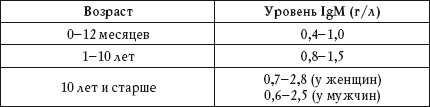
Повышенный показатель
Повышение уровня IgM наблюдается при:
• внутриутробных инфекциях у новорожденных;
• острых и хронических заболеваниях дыхательных путей и желудочно-кишечного тракта;
• ревматоидном артрите;
• остром и хроническом гепатите;
• циррозе печени;
• множественной миеломе IgM-типа;
• паразитарных заболеваниях;
• энтеропатии;
• макроглобулинемии Вальденстрема.
Пониженный показатель
Понижение уровня IgM наблюдается при:
• состояниях после цитостатической и лучевой терапии;
Понижение уровня IgM и IgG в крови может вызвать прием декстрана и препаратов золота.
• лимфоме;
• ожогах;
•гастроэнтеропатиях;
• состоянии после спленэктомии;
• селективном дефиците IgM;
• болезни Брутона.
Иммуноглобулины класса G (IgG)
Это основной вид иммуноглобулинов сыворотки крови, участвующих в иммунном ответе. IgG синтезируется плазмоцитами, его дефицит приводит к ослаблению иммунной системы.
Иммуноглобулины класса G нейтрализуют бактериальные экзотоксины и участвуют в аллергических реакциях. В ответ на хроническую или возвратную инфекцию уровень IgG в сыворотке крови возрастает.
Иммуноглобулины класса G проникают через плаценту от матери к плоду, благодаря чему у новорожденного образуется пассивный иммунитет к отдельным инфекционным болезням, например к кори. Материнские IgG исчезают в первые 9 месяцев жизни, когда в организме ребенка начинается синтез собственных IgG.
Анализ на IgG рекомендуется при:
• хронических бактериальных респираторных инфекциях;
• гнойном отите;
• сепсисе;
• хроническом вирусном гепатите;
• циррозе печени;
• ревматоидном артрите;
• системной красной волчанке;
• дерматомиозите;
• ВИЧ-инфекции;
• миеломной болезни;
• онкологических заболеваниях. Нормальные показатели уровня IgG приведены в таблице 56.
Таблица 56
Уровень IgG в крови. Нормальные значения
Повышенный показатель
Повышение уровня IgG наблюдается при:
• туберкулезе;
• инфекционном мононуклеозе;
• системной красной волчанке;
• ревматоидном артрите;
• хроническом гепатите;
• циррозе печени;
• саркоидозе;
• хроническом гранулематозе;
• множественной миеломе IgG-типа;
• паразитарных заболеваниях;
• ВИЧ-инфекции.
Пониженный показатель
Понижение уровня IgG наблюдается при:
• наследственной мышечной дистрофии;
• болезни Брутона;
• синдроме Вискотта – Олдрича;
• лимфопролиферативных заболеваниях;
• новообразованиях лимфатической системы;
• энтеро– и нефропатиях;
• радиационном облучении;
• состоянии после спленэктомии;
• лечении цитостатиками и иммунодепрессантами;
• аллергических реакциях;
• МИС-синдроме у грудных детей;
• ВИЧ-инфекции.
Компоненты системы комплемента С3 и С4
С3 – это центральный компонент системы комплемента, белок острой фазы воспаления. Он образуется в печени, лимфоидной ткани, макрофагах, фибробластах и коже. Играет огромную роль в защите организма от инфекций.
С4 – гликопротеин, который синтезируется в костях и легких. Он поддерживает фагоцитоз, участвует в нейтрализации вирусов и увеличивает проницаемость стенки сосудов.
Анализ на С3 и С4 рекомендуется при:
• аутоиммунных нарушениях;
• повторных бактериальных инфекциях;
• диагностике системной красной волчанки, ревматоидного васкулита, подострого бактериального эндокардита, гломерулонефрита, ревматической полимиалгии, смешанной криоглобулинемии, грамположительной бактериемии, диссеминированной цитомегаловирусной инфекции.
Нормальные показатели уровня С3 и С4 приведены в таблицах 57 и 58.
Таблица 57
Уровень С3 в крови. Нормальные значения
Таблица 58
Уровень С4 в крови. Нормальные значения
Повышенный показатель
Повышение уровня С3 наблюдается при:
• ревматизме;
• ревматоидном артрите;
• инфаркте миокарда;
• вирусном гепатите;
• язвенном колите;
• опухолях;
• бактериальной инфекции;
• пневмококковой пневмонии;
• зобе;
• тифе;
•тиреоидите;
• амилоидозе;
• саркоидозе;
• заболеваниях кишечника воспалительного характера.
Повышение уровня С4 наблюдается при:
• наличии более четырех С4-аллелей;
Повышение уровня С4 наблюдается у больных СПИДом при приеме препаратов циметидина и у людей, страдающих системной красной волчанкой, при лечении циклофосфамидом.
• малярии;
• системной красной волчанке;
• ревматоидном артрите;
• бактериальном эндокардите;
• сепсисе;
• гломерулонефрите;
• острых воспалительных заболеваниях;
• криоглобулинемии.
Пониженный показатель
Понижение уровня С3 наблюдается при:
• врожденном дефиците С3 и регуляторных белков;
• аутоиммунной гемолитической анемии;
• СПИДе;
• остром гломерулонефрите;
• системной красной волчанке;
• длительном голодании;
• малярии;
• подостром бактериальном эндокардите;
• паразитарных болезнях;
• бактериальном сепсисе;
• виремии;
• тяжелом поражении печени.
Понижение уровня С4 наблюдается при:
• дефиците С4 (у новорожденных);
• врожденном или приобретенном ангио-невротическом отеке;
• гломерулонефрите;
• системной красной волчанке;
• ревматоидном артрите;
• аутоиммунной гемолитической анемии;
• длительном голодании;
• сепсисе;
• респираторном дистресс-синдроме;
• криоглобулинемии;
• аутоиммунном тиреоидите;
• системном васкулите;
• тяжелых поражениях печени;
• состоянии после трансплантации почек.
Интерлейкины
Нормальные показатели данного анализа приведены в таблице 59.
Таблица 59
Интерлейкины. Нормальные значения
Интерлейкин 1-бета (IL-1b)
Интерлейкин 1-бета – это преобладающая форма IL-1, который относится к группе про-воспалительных цитокинов.
Свойства IL-1 и IL-1b сходны. IL-1 активирует в основном Т-лимфоциты и обладает паракринным и аутокринным действием. IL-1b – многофункциональный цитокин с широким спектром действия.
IL-1 участвует в регуляции температуры тела. Сильное повышение содержания этого цитокина вызывает гипотензию, анорексию, разрушение хрящей в суставах.
Он играет большую роль в развитии иммунитета – одним из первых включается в ответную защитную реакцию организма. IL-1b стимулирует и регулирует воспалительные иммунные процессы, активирует Ти В-лимфоциты, повышает фагоцитоз, проницаемость сосудистой стенки, бактерицидную и цитотоксическую активность.
Повышенный показатель
Повышение уровня IL-1b наблюдается при:
• пневмокониозе;
• туберкулезе;
• саркоидозе;
• септическом шоке;
• ревматоидном артрите;
• сахарном диабете I типа;
• воспалении кишечника;
• травмах;
• отторжении почечного трансплантата;
• воздействии ультрафиолетового излучения;
• остром и хроническом миелолейкозе;
• волосатоклеточном лейкозе;
• СПИДе;
• диссеминированной внутрисосудистой коагуляции.
При лечении глюкокортикоидами и циклоспорином А уровень IL-1b в крови может понизиться.
Пониженный показатель
Понижение уровня IL-1b (при динамическом наблюдении) наблюдается при:
• атопии;
• псориазе;
• респираторных вирусных инфекциях;
• раке легкого.
Интерлейкин-6 (IL-6)
Этот гликопротеин относится к цитокинам воспаления.
Источниками его продукции являются клетки иммунной системы, а также фибробласты, кератиноциты, хондроциты, клетки Лейдига в яичках, клетки стромы эндометрия, гладко-мышечные клетки кровеносных сосудов, фолликулярно-звездчатые, эндотелиальные и синовиальные клетки. Кроме того, IL-6 может выделяться опухолевыми клетками. Он влияет на кровь, печень, обмен веществ, иммунитет, стимулирует секрецию соматотропного гормона и подавляет секрецию тиреотропного гормона, регулирует процессы созревания антител, снижает синтез альбумина и преальбумина.
Повышенный показатель
Повышение уровня IL-6 наблюдается при:
• аутоиммунных заболеваниях;
Анализ на IL-6 назначают при раке яичников, остром панкреатите, тромбоцитозе и аутоиммунных заболеваниях.
• ревматоидном артрите;
• эссенциальной тромбоцитемии;
• тяжелых воспалительных процессах;
• травмах;
• болезни Кастлемана;
• псориазе;
• сердечной миксоме;
• алкогольном циррозе печени;
• саркоме Капоши;
• лимфоме;
• миеломе и карциноме почек;
• мезангиопролиферативном гломерулонефрите;
• панкреатите;
• обострении язвенной болезни желудка и двенадцатиперстной кишки;
• болезни Крона;
• синдроме Кавасаки;
• вирусном гепатите;
• глютеновой энтеропатии;
• неспецифическом язвенном колите;
• первичном билиарном циррозе.
Интерлейкин 8 (IL-8)
Этот гликопротеин продуцируют макрофаги, лимфоциты, фибробласты, клетки эпидермиса, а также эпителиальные и опухолевые клетки. IL-8 – это мощный медиатор воспаления, который в основном образуется под воздействием фактора некроза опухоли (ФНО), IL-1 и IL-3.
Анализ на IL-8 назначают, если необходимо углубленно исследовать особенности иммунного статуса при острых и хронических воспалительных заболеваниях.
Повышенный показатель
Повышение уровня IL-8 наблюдается при:
• ревматоидном артрите;
• септическом шоке;
• алкогольном гепатите;
• псориазе;
• хронических воспалительных процессах;
• обострении гломерулонефрита;
• инфаркте миокарда;
• пневмонии;
• менингите;
• язвенном колите;
• злокачественных новообразованиях.
Интерлейкин 10 (IL-10)
Это противовоспалительный цитокин, который продуцируется Т-клетками и подавляет продукцию всех провоспалительных цитокинов. IL-10 играет большую роль в геронтологии.
Повышенный показатель
Повышение уровня IL-10 наблюдается при:
• хронической почечной недостаточности;
• злокачественных новообразованиях;
• неходжкинской лимфоме.
Пониженный показатель
Понижение уровня IL-10 наблюдается при:
• метаболическом синдроме у полных женщин;
• инсульте;
• отторжении почечного трансплантата.
Фактор некроза опухоли (ФНО)
ФНО относится к цитокинам. Он оказывает цитотоксическое воздействие на опухолевые клетки in vivo (внутри клетки). ФНО способен вызывать геморрагический некроз некоторых опухолевых клеток, не повреждая при этом здоровых. ФНО играет большую роль в патогенезе и выборе метода лечения при септическом шоке, аутоиммунных заболеваниях, эндометриозе, ишемических поражениях мозга, остром панкреатите, слабоумии у больных СПИДом, алкогольном поражении печени, отторжении трансплантата, рассеянном склерозе.
ФНО имеет диагностическое значение при лечении гепатита С.
Нормальный показатель уровня ФНО в крови – до 8,21 пг/мл.
Повышенный показатель
Повышение уровня ФНО наблюдается при:
• сепсисе;
• ДВС-синдроме;
• инфекционном эндокардите;
• хроническом гепатите С;
• рецидивирующем герпесе;
• шоковых состояниях после травмы или ожога;
• аллергии;
• аутоиммунных заболеваниях;
• злокачественных новообразованиях;
• атеросклеротическом слабоумии;
• ревматоидном артрите;
• хроническом бронхите;
• псориазе;
• миеломной болезни;
• коронарном атеросклерозе;
• грибовидном микозе.
Пониженный показатель
Понижение уровня ФНО (при динамическом наблюдении) наблюдается при:
• тяжелом атопическом синдроме;
• раке желудка;
• первичном и вторичном иммунодефиците;
• пернициозной анемии.
Уровень ФНО может снизиться при лечении иммунодепрессантами, кортикостероидами и цитостатиками.
Антитела
Антитела класса IgA к глиадину
Это серологический тест, который используется в диагностике целиакии.
Глиадин является спирторастворимой фракцией глютена. Это вещество относится к токсическим агентам, вызывающим у некоторых людей целиакию (глютен-чувствительную энтеропатию) – заболевание тонкого кишечника. При целиакии происходит аутоиммунное поражение слизистой оболочки тонкой кишки, характеризующееся потерей ворсинок и появлением большого количества межэпителиальных лимфоцитов. Это приводит к нарушению всасывания питательных веществ, в результате чего больного беспокоят метеоризм, вздутие живота, диарея и снижение веса.
Целиакия может спровоцировать развитие анемии, остеохондроза и нарушения репродуктивной функции.
Целиакия может развиться на фоне дефицита IgA, герпетиформногодерматита, аутоиммунного тиреоидита, сахарного диабета и неврологических нарушений. Также существует наследственная предрасположенность к данному заболеванию.
Нормальные показатели теста приведены в таблице 60.
Таблица 60
Анализ на антитела класса IgA к глиадину
Повышенный показатель
Повышение значений серологического теста наблюдается при:
• целиакии;
• язвенном колите;
• болезни Крона;
• ревматоидном артрите;
• системном склерозе;
• синдроме Шегрена;
• дефиците галактозидазы;
• идиопатическом фиброзирующем альвеолите;
• фибротической стадии саркоидоза.
Антитела к эндомизию IgA и IgG
Это один из самых эффективных тестов, позволяющих диагностировать целиакию. Его результат может быть положительным или отрицательным.
Положительный результат
Положительный результат теста наблюдается при:
•целиакии;
• герпетиформном дерматите.
Антитела к тромбоцитам IgG
С помощью этого скринингового теста можно выявить специфические тромбоцитарные антитела.
Антитела к тромбоцитам появляются в крови при идиопатической тромбоцитопенической и посттрансфузионной пурпуре, аллоиммунной тромбоцитопении новорожденных. Также они могут присутствовать при некоторых системных, инфекционных, лимфопролиферативных и неопластических заболеваниях.
Результат анализа может быть положительным или отрицательным.
Положительный результат
Положительный результат теста наблюдается при:
• идиопатической тромбоцитопенической пурпуре (у 90% обследуемых);
Отрицательный результат анализа свидетельствует об отсутствии антител к тромбоцитам IgG. Однако существуют ложноотрицательный и ложноположительный результаты. Последний часто бывает у людей, страдающих неиммунной тромбоцитопенией.
• посттрансфузионной пурпуре;
• рефрактерностиктром-боцитам;
• ВИЧ-инфицировании;
• болезни Эпштейна -Барр;
• системной красной волчанке.
Антитела к кардиолипину IgG
Этот тест используется в диагностике антифосфолипидного синдрома. Антитела к кардиолипину относятся к аутоиммунным антифосфолипидным антителам. Они включены в патогенез антифосфолипидного синдрома, который сопровождается тромбозами, бесплодием, невынашиванием плода (повторным) и тромбоцитопенией. Результат анализа может быть положительным или отрицательным.
Положительный результат
Положительный результат теста наблюдается при:
• антифосфолипидном синдроме;
• системной красной волчанке;
• гепатите С;
• малярии;
• сифилисе;
• ВИЧ-инфицировании;
• бореллиозе.
Диагноз «антифосфолипидный синдром» ставится, если тестирование дает положительный результат в течение 6 недель. Дело в том, что в случае острых инфекционных заболеваний повышение уровня антифосфо-липидных антител бывает временным.
Антитела к фосфатидил-серину IgG, IgM
Этот тест повышает точность лабораторной диагностики антифосфолипидного синдрома применительно к случаям бесплодия и невынашивания беременности.
Результат анализа может быть положительным или отрицательным.
Положительный результат
Положительный результат теста наблюдается при:
• антифосфолипидном синдроме;
• системной красной волчанке;
• гепатите С;
• малярии;
• ВИЧ-инфицировании;
• сифилисе;
• боррелиозе;
• алкогольном циррозе печени;
• лейкемии;
• злокачественных опухолях.
Антитела к фосфолипидам IgM и IgG (АФЛ)
Этот тест используется в диагностике антифосфолипидного синдрома.
При антифослипидном синдроме поражаются сосуды сердца, головного мозга, печени,почек и надпочечников. АВС может сопровождаться нарушением мозгового кровообращения с развитием инсульта и кожными заболеваниями.
Действие аутоиммунных АФЛ направлено против основных составляющих клеточных мембран (фосфолипидов). АФЛ нарушают нормальное функционирование кровеносных сосудов, вызывая их сужение (васкулопатию) и образование тромбов.
Результат анализа может быть положительным или отрицательным.
Положительный результат
Положительный результат теста наблюдается при:
• антифосфолипидном синдроме;
• ВИЧ-инфицировании;
• вирусном гепатите С;
• системной красной волчанке;
• злокачественных новообразованиях;
• приеме оральных контрацептивов и психотропных препаратов.
Антитела к кератину
Этот тест используется в диагностике ревматоидного артрита. При этом анализ позволяет обнаружить у пациента артрит за 5-10 лет до проявления его симптомов.
Результат анализа может быть положительным или отрицательным.
Положительный результат
Положительный результат теста наблюдается при:
• ревматоидном артрите;
• синдроме Шегрена;
• системной красной волчанке.
Ауто-АТ к сердечной мускулатуре
Этот тест используется в диагностике миокардита и дилатационной кардиомиопатии, реже – ишемической и других болезнях сердца.
Результат анализа может быть положительным или отрицательным.
В сыворотке крови здоровых людей ауто-АТ к сердечной мускулатуре отсутствует.
Положительный результат Положительный результат теста наблюдается при:
• миокардите;
• дилатационной кардиомиопатии;
• состояниях после операций на сердце;
• ишемической и других болезнях сердца (редко).
Антитела к цитоплазме нейтрофилов (ANCA)
Этот тест используется в диагностике системного васкулита. ANCA связаны с гранулематозом Вегенера (васкулитом мелких сосудов) и другими формами васкулита (узелковым периартериитом, синдромом Чарга-Стросса, быстропрогрессирующим гломерулонефритом).
Результат анализа может быть положительным или отрицательным.
Положительный результат
Положительный результат теста наблюдается при:
• гранулематозе Вегенера;
• микроскопическом полиангиите;
• идиопатическом быстропрогрессирующем гломерулонефрите;
• синдроме Чарга – Стросса;
Присутствие в крови ANCA наблюдается у 6% здоровых людей.
• классическом узелковом полиартериите;
• синдроме Гудпасчера;
• язвенном колите;
• системной красной волчанке.
Антитела к базальной мембране кожи (IS, BMZ)
Этот тест используется в диагностике кожных заболеваний.
Наличие антител к межклеточному веществу кожного эпителия (IS) характерно для пузырчатки (у 90% больных тест дает положительный результат), антител к базальной мембране многослойного эпителия (BMZ) – для пемфигоида.
Результат анализа может быть положительным или отрицательным.
Положительный результат
Наличие в анализе IS наблюдатеся при:
• пузырчатке;
• приобретенном буллезном эпидермолизе. Наличие в анализе BMZ наблюдается при:
• активном буллезном пемфигоиде (70% случаев);
• везикулярном пемфигоиде (50% случаев);
• приобретенном эпидермолизе (50% случаев);
• рубцующемся пемфигоиде (10% случаев).
Антитела к базальной мембране клубочков почек IgA, IgM, IgG
Тест используется в диагностике синдрома Гудпасчера (почечно-легочный синдром) – редкого аутоиммунного заболевания, при котором иммунитет действует против нормальных компонентов базальной мембраны клубочков почек и альвеолярного эпителия.
Результат анализа может быть положительным или отрицательным.
Клиническими проявлениями синдрома Гудпасчера являются быстро прогрессирующий гломерулонефрит и легочные кровотечения.
Положительный результат
Положительный результат теста наблюдается при:
• синдроме Гудпасчера;
• быстропрогрессирующем гломерулонефрите;
• тубулоинтерстициальной патологии почек.
Антитела к микросомам печени и почек типа 1 (anti-LKM1)
Этот тест используется в диагностике аутоиммунного гепатита 2-го типа – редкого хронического заболевания печени.
Также анализ помогает выявить больных хроническим гепатитом С.
Результат анализа может быть отрицательным, сомнительным и положительным.
Наличие anti-LKM1 в крови может наблюдаться при приеме тиенама, дигидралазина, галотана, фенитоина, фенобарбитала и карбамазепина.
Положительный результат
Положительный результат теста наблюдается при:
• аутоиммунном гепатите 2-го типа (в большинстве случаев);
• вирусном гепатите С, D.
Антитела к гладкой мускулатуре (SMA, ASMA)
Этот тест используется в диагностике гепатита 1-го типа – классического аутоиммунного гепатита.
Результат анализа может быть положительным или отрицательным.
Положительный результат
Положительный результат теста наблюдается при:
• аутоиммунном гепатите 1-го типа (70% случаев);
• вирусном гепатите;
• онкологических заболеваниях;
• инфекционном мононуклеозе.
Антитела к париетальным клеткам желудка (PCA)
Этот тест используется в диагностике хронического атрофического гастрита и пернициозной анемии.
Результат анализа может быть положительным или отрицательным.
Положительный результат
Положительный результат теста наблюдается при:
• пернициозной анемии (до 90% случаев);
• атрофическом гастрите без пернициозной анемии (50% случаев);
• ювенильном диабете;
• болезни Аддисона;
• язвенном гастрите;
• синдроме Шегрена;
• железодефицитной анемии.
Антитела к митохондриям (AMA)
Этот тест используется в диагностике билиарного цирроза печени. При этом АМА обнаруживаются в анализе еще до начала клинических проявлений заболевания.
У 5-10% больных первичным билиарным циррозом печени АМА в анализе крови не выявляются.
Результат анализа может быть положительным или отрицательным.
Положительный результат
Положительный результат теста наблюдается при:
• первичном билиарном циррозе печени (90% случаев);
• хроническом активном гепатите;
• аутоиммунных заболеваниях (редко).
Антитела класса IgG к двуспиральной (нативной) ДНК (анти-дсДНК IgG)
Этот тест используется в диагностике системной красной волчанки.
Иногда анти-дсДНК (в низких концентрациях) обнаруживается в крови при других аутоиммунных заболеваниях.
Результат анализа может быть положительным, отрицательным или сомнительным.
Положительный результат
Положительный результат теста наблюдается при:
• системной красной волчанке (в большинстве случаев);
• синдроме Шегрена;
• ревматоидном артрите;
• билиарном циррозе;
• склеродермии;
• цитомегаловирусной инфекции;
• инфицировании вирусом Эпштейна – Барра.
Антиядерные антитела (ANA)
Этот один из самых распространенных тестов, которые используются в диагностике аутоиммунных заболеваний. Существует более ста разновидностей антиядерных антител, действующих против гистонов, нуклеиновых кислот, компонентов сплайсосом, рибонуклеопротеинов, а также белков ядерной мембраны, ядрышек и центромер. Результат анализа может быть положительным или отрицательным.
Положительный результат
Положительный результат теста наблюдается при:
• системной красной волчанке;
• синдроме Шегрена;
• ревматоидном артрите;
• склеродермии;
• сахарном диабете;
• множественном склерозе;
• легочном фиброзе;
• хроническом активном гепатите;
• туберкулезе;
• ВИЧ-инфицировании;
• подостром бактериальном эндокардите.
Интерфероновый статус
Интерферон (ИФН) – это важный компонент врожденной неспецифической сопротивляемости организма инфекциям. В медицине препараты интерферона используются очень широко. Выделяют три типа интерферонов – ?, ? и ?. Первые два типа имеют общие рецепторы и сходные функции, их называют интерферонами I типа. Интерферон-?, известный также как интерферон II, имеет свои рецепторы и функции.
Исследование интерферонового статуса помогает выявить недостаточность системы интерферона – у здоровых людей уровень сывороточного интерферона низкий, а значения индуцированного синтеза интерферонов – высокие.
Хронические вирусные инфекции подавляют все показатели интерферонового статуса.
Исследование интерферонового статуса с определением чувствительности к лекарствам проводят, чтобы правильно подобрать препараты интерферона, индукторы интерферона и иммуномодуляторы.
К препаратам интерферона относятся:
• ингарон – рекомбинантный человеческий интерферон-?;
• интрон – рекомбинантный человеческий интерферон-?-2Ь;
• реаферон – рекомбинантный человеческий интерферон-?-2;
• реальдирон – рекомбинантный человеческий интерферон-?-2Ь;
• роферон – рекомбинантный человеческий интерферон-?-2а.
К индукторам интерферона относятся:
• амиксин;
• кагоцел;
• неовир;
• ридостин;
• циклоферон.
Результат исследования интерферонового статуса с определением чувствительности к лекарственным препаратам должен сопровождаться медицинским заключением.
К иммуномодуляторам относятся:
• галавит – производное фталгидразида;
• гепон;
• иммунал;
• иммунофан;
• иммуномакс;
• ликопид;
• полиоксидоний;
• тактивин;
• тимоген.
Нормальные данные исследования интерферонового статуса приведены в таблице 61.
Таблица 61
Интерфероновый статус. Нормальные значения
Чтобы определить индивидуальную чувствительность к препаратам ИФН, основываясь на результатах теста, следует ознакомиться с таблицей 62.
Таблица 62
Расшифровка результатов теста индивидуальной чувствительности к препаратам интерферона
Определение нейтрализующих антител к препаратам интерферона
При длительном лечении препаратами интерферона могут вырабатываться антитела, снижающие эффективность терапии. Определить, вырабатываются ли они под воздействием того или иного лекарства, помогает специальный тест. Результат анализа может быть положительным или отрицательным. Положительный результат указывает на появление нейтрализующих антител.
Аллергологические исследования
Согласно медицинской статистике, в настоящее время аллергическими заболеваниями страдает 20-40% людей. К таким болезням относятся аллергический ринит и конъюнктивиты, бронхиальная астма, а также атопический дерматит.
Основной целью диагностики при аллергических заболеваниях является определение аллергена или аллергенов, к которым у пациента имеется повышенная чувствительность.
Концентрация общего IgE в крови колеблется в зависимости от возраста. Самая низкая концентрация отмечается у новорожденных.
В настоящее время для диагностики аллергии используют кожные пробы и иммунологические методы. Кожные пробы проводят только после 5-летнего возраста. К тому же данный анализ может вызвать тяжелые осложнения, в том числе и анафилактический шок. Именно поэтому в большинстве лабораторий используют иммунологические способы – исследуют наличие в крови IgE-антител, ответственных за аллергические реакции, и специфических IgE-антител.
Иммуноглобулин Е общий (IgE)
Попадая в организм, аллерген взаимодействует с IgE, в результате чего образуются комплексы «IgE – специфический антиген». Это приводит к поступлению ионов кальция в клетку-мишень и выбросу гистамина и других веществ из клеток, на мембране которых имеются IgE. Поступление гистамина и цитотоксических веществ в межклеточное пространство вызывает местную воспалительную реакцию, которая проявляется в виде ринита, бронхита, астмы, кожной сыпи или анафилактического шока.
Нормальные показатели IgE в крови приведены в таблице 63.
Таблица 63
Нормальный уровень IgE в крови
У людей, страдающих аллергией, уровень IgE повышен не только во время приступов заболевания, но и между ними.
Повышенный показатель
Повышение уровня IgE наблюдается при:
• крапивнице;
• атопическом дерматите;
•поллинозах;
• бронхиальной астме;
• отеке Квинке;
• анафилактическом шоке;
• аллергическом рините;
• пищевой аллергии;
• сывороточной болезни;
• синдроме Стивенса – Джонсона;
• синдроме Лайелла;
• синдроме Вискотта-Олдрича;
• паразитарных заболеваниях;
• синдроме гипериммуноглобулинемии Е;
• IgE-миеломе.
Определение субклассов IgG к пищевым аллергенам
Антитела класса IgG к пищевым аллергенам – это потенциальный фактор повышенной чувствительности к определенным компонентам пищи.
Самые распространенные симптомы пищевой аллергии:
• атопический дерматит;
• крапивница;
• аллергический ринит;
• анафилактический шок;
• тошнота и рвота;
• диарея;
• боли в животе.
Есть данные, что пищевая аллергия связана с синдромом хронической усталости и мигренью.
Результат анализа может быть отрицательным или положительным. Отрицательный результат указывает на отсутствие аллергической реакции, положительный расшифровывается следующим образом:
• + – слабая аллергическая реакция;
• ++ – умеренная аллергическая реакция;
• +++ – сильная аллергическая реакция.
Пищевые аллергены
К самым распространенным пищевым аллергенам относятся клубника, малина, вишня, авокадо, ананас, морковь, апельсин, грейпфрут, дыня, баклажан, банан, огурец, помидор, оливки, виноград, черный перец, перец чили, голубика, персик, петрушка, грецкие орехи, груша, зеленый горошек, свекла, цветная и стручковая фасоль, земляника, сельдерей, слива, соевые бобы, брокколи, цветная, бело– и краснокочанная капуста, томаты, картофель, тыква, кукуруза, кунжут, лимон, чеснок, лук, черный чай, кофе, яблоки, миндаль, арахис, сыр, брынза, овсяная, гречневая, пшенная и ячменная крупа, фисташки, куриные яйца (белок и желток), коровье и козье молоко, йогурт, пивные и пекарские дрожжи, семена подсолнуха, пшеница, рожь, мед, шоколад, сливочное масло, тростниковый сахар, шампиньоны, баранина, говядина, свинина, индейка, мясо курицы и кролика, палтус, сардины, камбала, треска, тунец, форель, хек, лосось, кальмары, крабы, креветки, устрицы.
Эозинофильный катионный белок (ECP)
Это компонент специфических секреторных гранул эозинофилов, для которого характерна высокая цитотоксическая активность по отношению к различным микроорганизмам и клеткам, что проявляется в перфорировании мембран клеток-мишеней.
Уровень ЕСР в крови показывает интенсивоность воспалительных процессов, протекающих с вовлечением эозинофилов: аллергического ринита, экземы, бронхиальной астмы. Нормальный показатель ЕСР в крови – до 24 нг/мл.
Повышенный показатель
Повышение уровня ЕСР в крови наблюдается при:
• бронхиальной астме;
• аллергическом рините;
• аллергическом конъюнктивите;
• аллергическом отите;
• атопическом дерматите;
• паразитарных заболеваниях;
• инфекционных болезнях;
• некоторых аутоиммунных заболеваниях;
• злокачественных опухолях;
• реактивной и идиопатической эозинофилии.